AntibodyForests - a framework for network analysis on single-cell immune receptors
Tudor-Stefan Cotet, Alexander Yermanos
16/06/2022
Source:vignettes/AntibodyForests.Rmd
AntibodyForests.Rmd1. Introduction
The Platypus family of packages are meant to provide potential pipelines and examples relevant to the broad field of computational immunology. The core set of functions can be found at https://github.com/alexyermanos/Platypus and examples of use can be found in the publications https://doi.org/10.1093/nargab/lqab023 and insert biorxiv database manuscript here.
AntibodyForests is a part of the Platypus ecosystem designed entirely for network inference and analysis on single-cell immune receptor repertoires insert biorxiv AntibodyForests manuscript here. The main method of inferring networks in AntibodyForests is the minimum spanning tree algorithm (nodes are added iteratively based on the minimum string distance, resulting in the minimum total edge weight in a single tree) with custom tie solving implementations for edges with equal string distances. Moreover, AntibodyForests has been extended to complex similarity networks: graphs are built by first creating a complex network across all available sequences in a clonotype/reperoire, then edges are pruned according to a pruning threshold. Several other network inference algorithms have been added (e.g., inferring phylogenetic trees via the phangorn and ape packages or the IQ-TREE software, then converting those into network objects).
Lastly, AntibodyForests integrates a suite of network analysis methods, visualization, and unique graph types. For example, shortest paths from specific nodes can be computed via AntibodyForests_paths, then the nodes that are traversed can be visualized via barplots in the same function; or bipartite networks can be created via AntibodyForests_heterogeneous: these combine the two modalities available in the VGM object - receptor sequences and cell expression, for an intuitive visualization and analysis of complex features (and relating cell phenotypes to sequence graph properties).
In this vignette, we will first see how Platypus is connected to AntibodyForests, the network-building algorithms available in AntibodyForests, how an AntibodyForests object is organized, how to visualize networks via AntibodyForests_plot, as well as the suite of custom graph types and network analyses available.
2. Loading sample data and preprocessing
Here we use only the first sample of the larger dataset explored in https://doi.org/10.1101/2021.11.09.467876 We load raw data from PlatypusDB and preprocess via the VDJ_GEX_matrix function.
library(Platypus)
library(tidyverse)
#Fetch only sample 1
PlatypusDB_fetch(PlatypusDB.links = c("agrafiotis2021a/TNFR2.BM.3m.S1/ALL"),
load.to.enviroment = T, combine.objects = T)
VGM <- VDJ_GEX_matrix(Data.in = list(agrafiotis2021a_TNFR2.BM.3m.S1_VDJGEXdata), parallel.processing = "parlapply", trim.and.align = T)
#saveRDS(VGM, file = "VGM.rds")
#VGM <- readRDS("VGM.rds")The output of the VDJ_GEX_matrix is the main object for all downstream functions in Platypus, as well as AntibodyForests. We can create this directly into the R session by using the public data available on PlatypusDB. For the AntibodyForests ecosystem, we will mostly focus on the VDJ/sequence part of the VGM object (VGM[[1]]), unless the GEX/Seurat object is needed for some specific analyses (e.g., for the bipartite networks in AntibodyForests_heterogeneous or for annotating the community membership in AntibodyForests_communities).
3. Create immune receptor networks via AntibodyForests
AntibodyForests offers a set of network inference algorithms, ranging from evolutionary networks via minimum spanning trees/phylogenetic trees to complex similarity networks.
We will showcase these inference methods, as well as how the graph construction process can be customized according to several parameters: either custom tie solving methods for the minimum spanning trees, sequence and cell filtering, feature filtering, and distance thresholds for the similarity networks.
3.1. Creating minimum spanning trees
Minimum spanning trees are created by iteratively adding nodes into a network, selecting the edges with the minimum weight/string distance between the nodes already in the network and the nodes to be added, until convergence. An issue arises when we have multiple nodes with equal-weight links to the nodes already in the graph: selecting a single node per iteration can be customized inside the AntibodyForests function via the resolve.ties parameter. Moreover, multiple tie solving options can be chained together in case ties are still present after a resolve.ties filtering step. This ensures tree convergence, as well as finer control over the inference algorithm according to the desired biological priors.
To create such trees, the network.algorithm parameter needs to be set to ‘tree’ (default). We will also create networks for a single clonotype for easier visualization.
AntibodyForests(VGM[[1]],
network.algorithm = 'tree',
specific.networks = 'clonotype7') %>% AntibodyForests_plot(node.label = NULL, node.scale.factor = 8)## AntibodyForests object
## 35 sequence nodes across 1 sample(s) and 1 clonotype(s)
## 35 total network nodes
## Sample id(s): s1
## Clonotype id(s): clonotype7
## Networks/analyses available: tree, plot_ready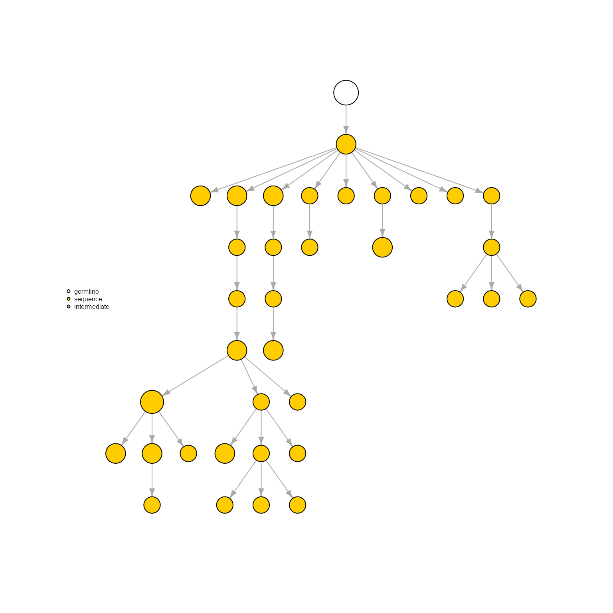
Selecting the sequence type
First, the sequence types for network building can be selected via the sequence.type parameter. AntibodyForests covers all sequences available in the Platypus VDJ dataframe. These are documented inside the AntibodyForests function.
AntibodyForests(VGM[[1]],
network.algorithm = 'tree',
sequence.type = 'VDJ.VJ.nt.trimmed',
specific.networks = 'clonotype7') %>% AntibodyForests_plot(node.label = NULL, node.scale.factor = 8)## AntibodyForests object
## 35 sequence nodes across 1 sample(s) and 1 clonotype(s)
## 35 total network nodes
## Sample id(s): s1
## Clonotype id(s): clonotype7
## Networks/analyses available: tree, plot_ready
AntibodyForests(VGM[[1]],
network.algorithm = 'tree',
sequence.type = 'cdr3.aa',
specific.networks = 'clonotype7') %>% AntibodyForests_plot(node.label = NULL, node.scale.factor = 8)## AntibodyForests object
## 13 sequence nodes across 1 sample(s) and 1 clonotype(s)
## 13 total network nodes
## Sample id(s): s1
## Clonotype id(s): clonotype7
## Networks/analyses available: tree, plot_ready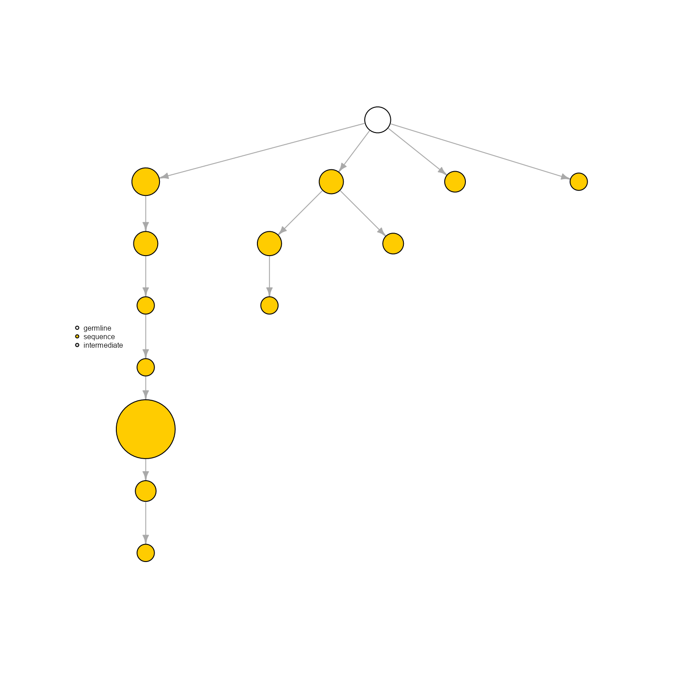
AntibodyForests(VGM[[1]],
network.algorithm = 'tree',
sequence.type = 'VDJ.nt.raw',
specific.networks = 'clonotype7') %>% AntibodyForests_plot(node.label = NULL, node.scale.factor = 8)## AntibodyForests object
## 47 sequence nodes across 1 sample(s) and 1 clonotype(s)
## 47 total network nodes
## Sample id(s): s1
## Clonotype id(s): clonotype7
## Networks/analyses available: tree, plot_ready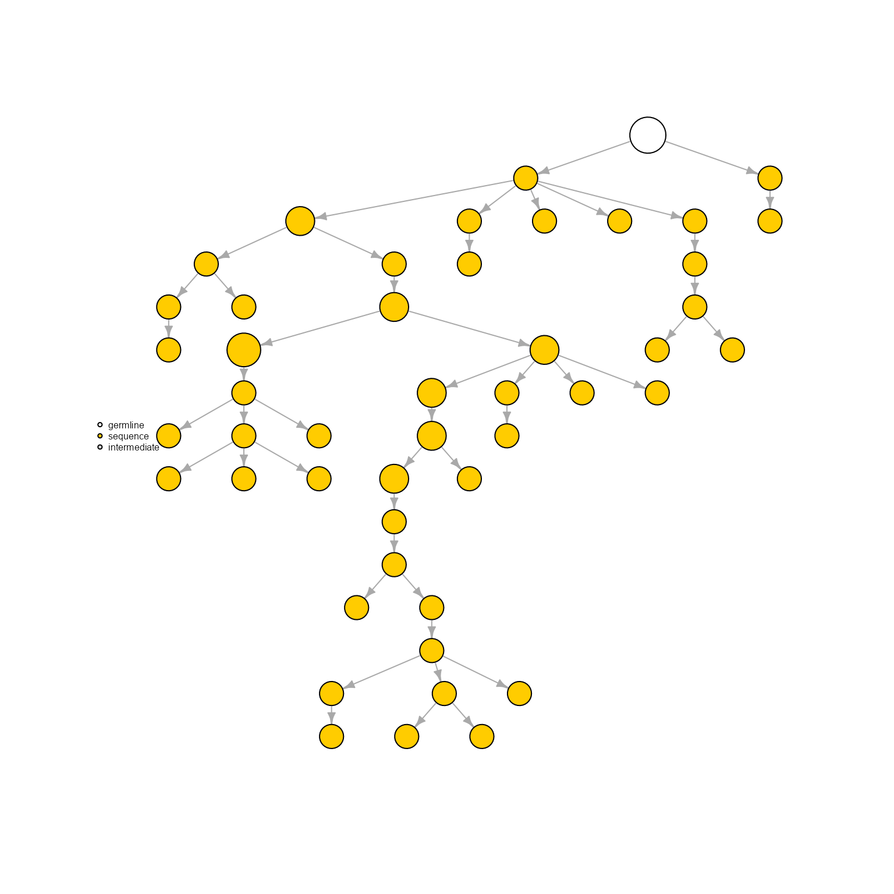
Including a germline
Including a germline can be done via include.germline. If this parameter is NULL (as seen above), germlines will not be added to the tree inference step. Otherwise, ‘trimmed.ref’ adds germlines from the VDJ_trimmed_ref and VJ_trimmed_ref columns in a VDJ - these are often the 10x alignment references as long as VDJ_GEX_matrix was run with trim.and.align set to T. More germline options/ germline inference algorithms will be added in the future!
AntibodyForests(VGM[[1]],
include.germline = 'trimmed.ref',
specific.networks = 'clonotype7') %>% AntibodyForests_plot(node.label = 'rank', node.scale.factor = 8)## AntibodyForests object
## 35 sequence nodes across 1 sample(s) and 1 clonotype(s)
## 35 total network nodes
## Sample id(s): s1
## Clonotype id(s): clonotype7
## Networks/analyses available: tree, plot_ready
AntibodyForests(VGM[[1]],
include.germline = NULL,
specific.networks = 'clonotype7') %>% AntibodyForests_plot(node.label = 'rank', node.scale.factor = 8)## AntibodyForests object
## 35 sequence nodes across 1 sample(s) and 1 clonotype(s)
## 35 total network nodes
## Sample id(s): s1
## Clonotype id(s): clonotype7
## Networks/analyses available: tree, plot_ready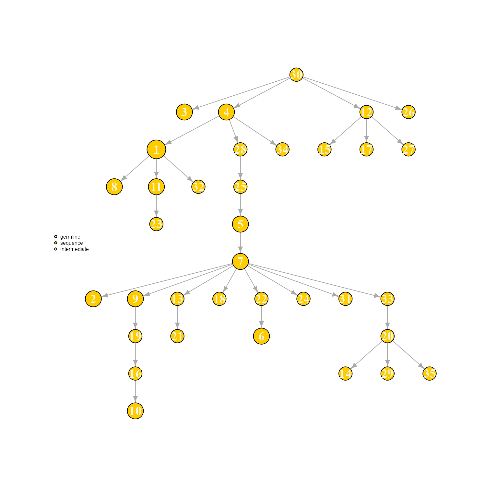
We can see how adding a germline changes the overall tree topology (as the first nodes to be added into the network are different). In this case, node labels are determined by the sequence order (ordered by expansion/number of cells).
Selecting different tie solving algorithms
As described above, the iterative approach in our minimum spanning tree algorithm can often end up with tied edges between nodes already in the tree and nodes to be added. Picking a desired node to be added first can be controlled via the resolve.ties parameter. The options available are all documented in the AntibodyForests function: one could choose from picking the first node in the tied node list (‘first’), picking a random one, picking the most or least expanded node - most/least amount of cells (‘max.expansion’, ‘min.expansion’), picking the node closest to the germline (‘closest.germline.distance’), etc. Moreover, nodes can also be prioritized based on additional features/ VDJ columns: e.g., prioritize adding OVA binder nodes (‘yes-OVA_binder’): first part separated by ‘-’ represent the feature to be added, second is the VDJ column name of those sequence features/attributes.
AntibodyForests(VGM[[1]],
resolve.ties = 'first',
specific.networks = 'clonotype8') %>% AntibodyForests_plot(node.label = 'rank', node.scale.factor = 8)## AntibodyForests object
## 27 sequence nodes across 1 sample(s) and 1 clonotype(s)
## 27 total network nodes
## Sample id(s): s1
## Clonotype id(s): clonotype8
## Networks/analyses available: tree, plot_ready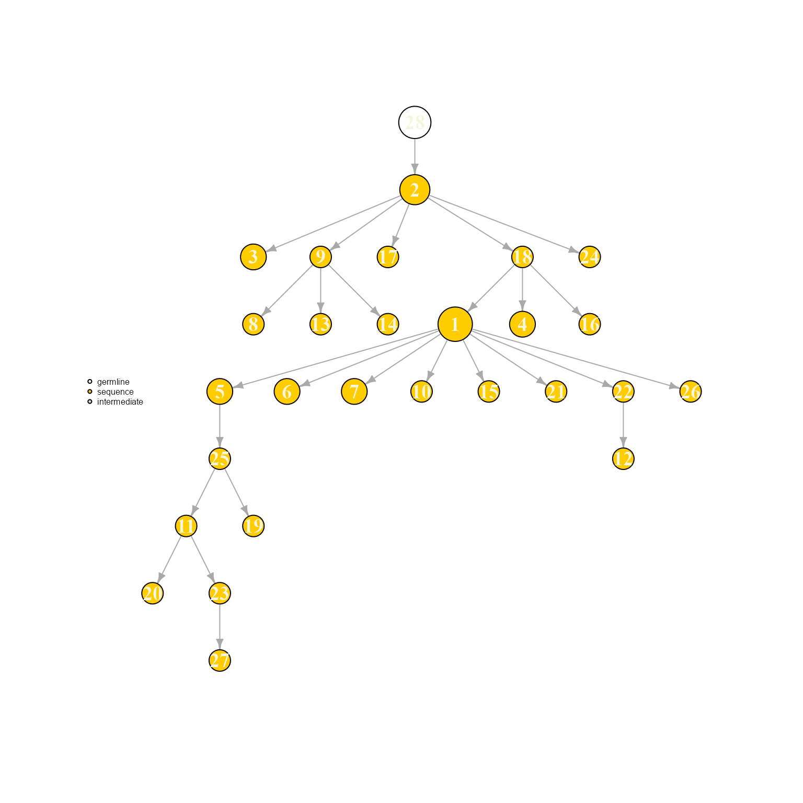
AntibodyForests(VGM[[1]],
resolve.ties = 'random',
specific.networks = 'clonotype8') %>% AntibodyForests_plot(node.label = 'rank', node.scale.factor = 8)## AntibodyForests object
## 27 sequence nodes across 1 sample(s) and 1 clonotype(s)
## 27 total network nodes
## Sample id(s): s1
## Clonotype id(s): clonotype8
## Networks/analyses available: tree, plot_ready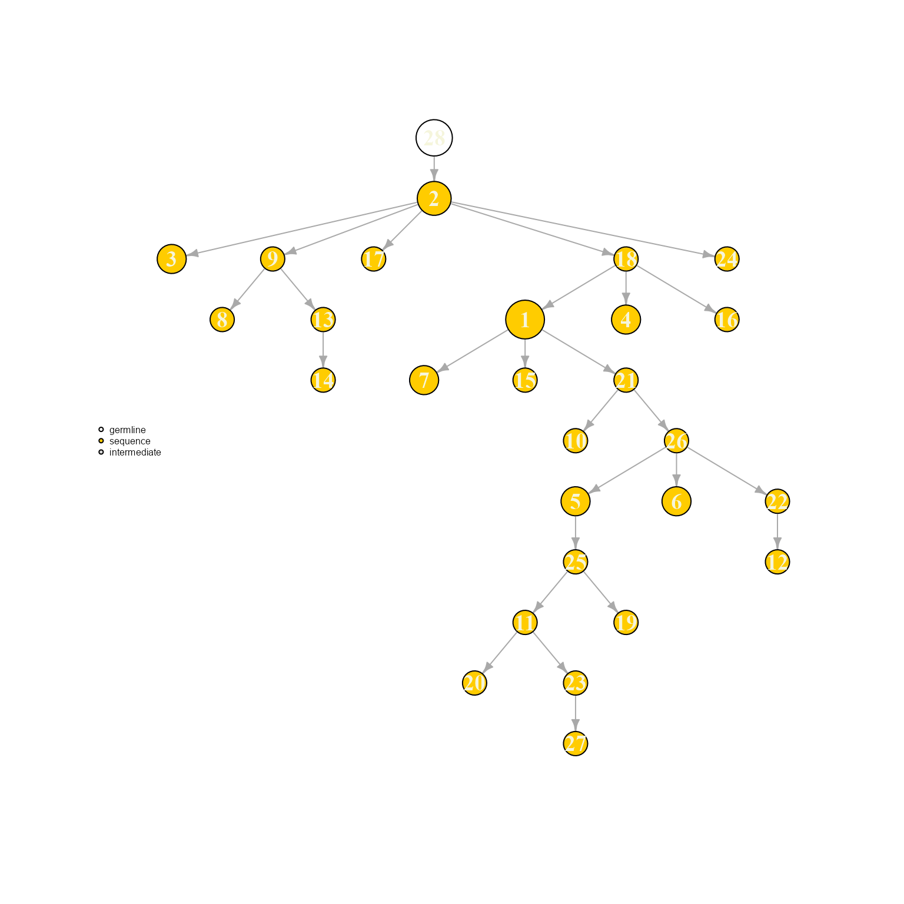
AntibodyForests(VGM[[1]],
resolve.ties = NULL,
specific.networks = 'clonotype8') %>% AntibodyForests_plot(node.label = 'rank', node.scale.factor = 8)## AntibodyForests object
## 27 sequence nodes across 1 sample(s) and 1 clonotype(s)
## 27 total network nodes
## Sample id(s): s1
## Clonotype id(s): clonotype8
## Networks/analyses available: tree, plot_ready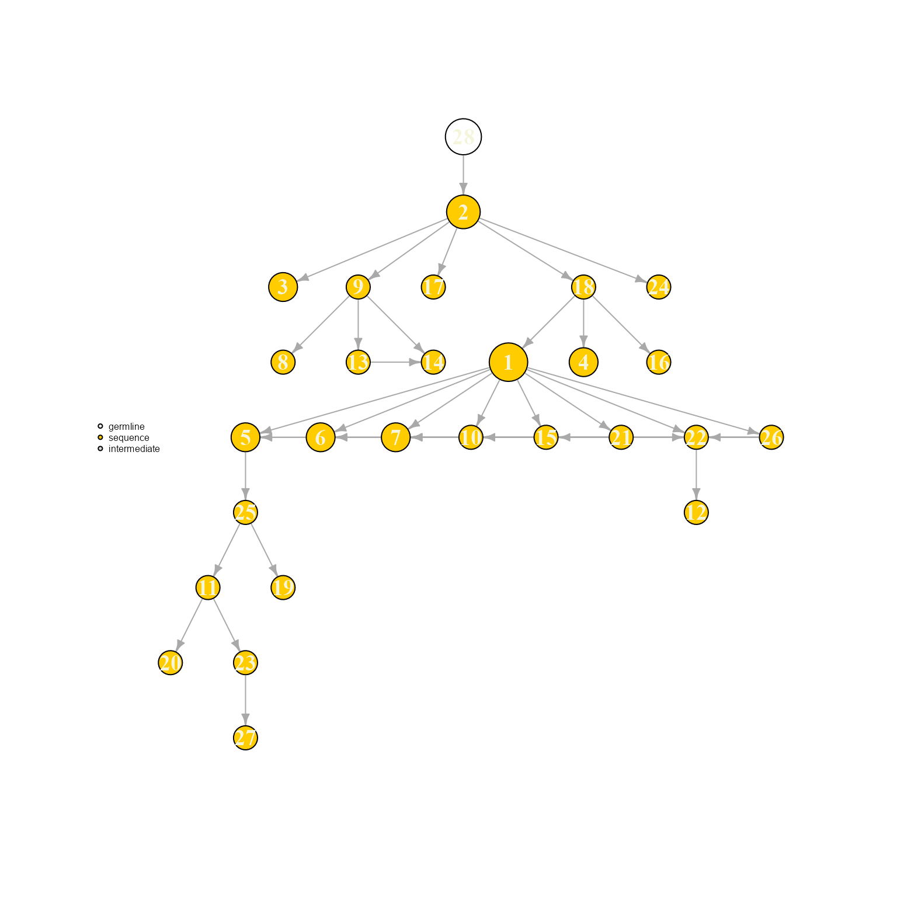
Ties can be visualized when setting resolve.ties to NULL. These options can have a rather meaningful effects on the resulting tree topology, therefore a tie solving option with relevant biological priors should be picked.
Hierarchical tie solving
In case ties are still not solved after picking a tie-solving mechanism, more mechanisms can be chained together to ensure convergence. Moreover, resolve.ties always ends with the ‘first’ option which will always pick a node: e.g., resolve.ties = ‘closest.germline.distance’ gets converted into resolve.ties = c(‘closest.germline.distance’, ‘first’) to ensure tree building always converges (in case nodes with tied edge distances also have the same string distance to the germline).
AntibodyForests(VGM[[1]],
resolve.ties = c('far.germline.distance', 'min.expansion'),
specific.networks = 'clonotype8') %>% AntibodyForests_plot(node.label = 'rank', node.scale.factor = 8)## AntibodyForests object
## 27 sequence nodes across 1 sample(s) and 1 clonotype(s)
## 27 total network nodes
## Sample id(s): s1
## Clonotype id(s): clonotype8
## Networks/analyses available: tree, plot_ready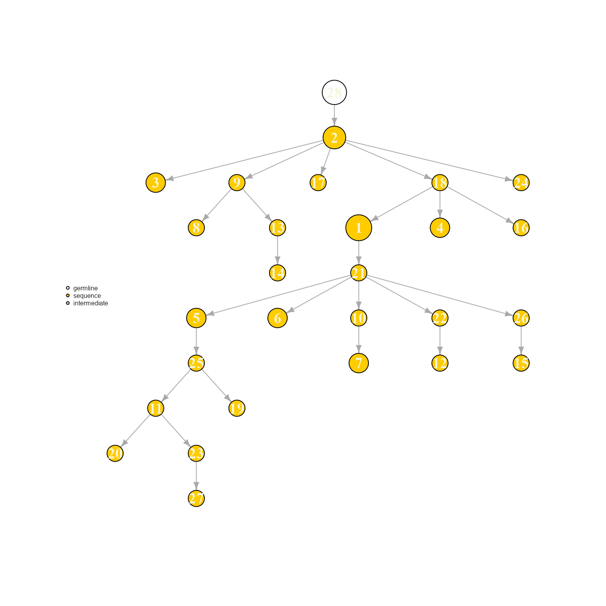
3.2. Creating phylogenetic trees
Phylogenetic trees can be inferred using various algorithms - the resulting phylo object are then converted into igraph objects. This can be done by setting the network.algorithm parameter to ‘phylogenetic.tree’ followed by the inference algorithm (‘phylogenetic.tree.nj). The algorithms available are neighbour-joining (’phylogenetic.tree.nj’), maximum-likelihood (‘phylogenetic.tree.ml’), and maximum parsimony (‘phylogenetic.tree.mp’)
AntibodyForests(VGM[[1]],
network.algorithm = 'phylogenetic.tree.nj',
specific.networks = 'clonotype8') %>% AntibodyForests_plot(node.label = NULL, node.scale.factor = 8)## AntibodyForests object
## 27 sequence nodes across 1 sample(s) and 1 clonotype(s)
## 26 intermediate nodes
## 53 total network nodes
## Sample id(s): s1
## Clonotype id(s): clonotype8
## Networks/analyses available: phylogenetic.tree.nj, plot_ready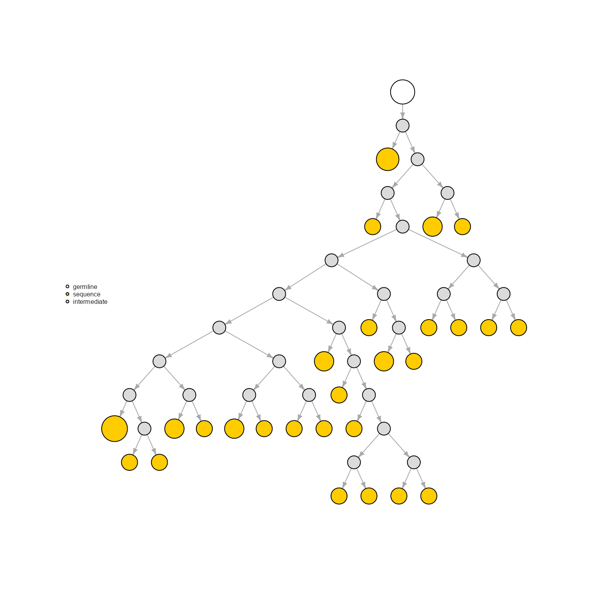
3.3. Creating similarity networks
Complex similarity networks can be creating by setting the network.algorithm to ‘prune’, followed by a pruning option: for example, ‘prune.distance’ will remove edges according to a distance threshold (specified as an integer in the distance.threshold parameter), ‘prune.expansion’ removes nodes with fewer cells than mentioned in pruning.threshold, ‘prune.degree’ remove nodes with a smaller degree than the pruning.threshold. These options can also be chained (‘prune.distance.expansion’ first prunes based on edge weights/string similarity, then number of cells per sequence, as long as pruning.threshold is a vector of 2 integers).
We will create networks for the CDRH3 sequences across our sample, to reduce running time (as creating complex networks for really large sequences has a bottleneck in the stringdistmatrix function from the stringdist package).
We will also change the plotting layout to ‘nice’ (the igraph::layout_nicely).
Pruning edges based on a distance threshold
We set keep.largest.cc to T to only keep the largest connected component in the resulting network (and remove singletons/doubletons/etc.). If keep.largest.cc or remove.singletons were set to NULL, we would included all nodes in the final network, with pruned/remaining edges. This is further described in the ‘AntibodyForests for similarity network construction and analysis’ vignette.
AntibodyForests(VGM[[1]],
sequence.type = 'VDJ.cdr3s.aa',
network.algorithm = 'prune.distance',
keep.largest.cc = T,
pruning.threshold = 3,
directed = F,
include.germline = NULL,
network.level = 'global') %>% AntibodyForests_plot(node.label = NULL, node.scale.factor = 4, network.layout = 'nice', show.legend = F)## Warning in vattrs[[name]][index] <- value: number of items to replace is not a
## multiple of replacement length## AntibodyForests object
## 471 sequence nodes across 1 sample(s) and 353 clonotype(s)
## 471 total network nodes
## Sample id(s): s1
## Clonotype id(s): clonotype1, clonotype2, clonotype3, clonotype4, clonotype5, clonotype6, clonotype7, clonotype8, clonotype9, clonotype10, clonotype11, clonotype12, clonotype13, clonotype14, clonotype15, clonotype16, clonotype17, clonotype18, clonotype19, clonotype21, clonotype22, clonotype23, clonotype24, clonotype25, clonotype26, clonotype27, clonotype28, clonotype29, clonotype30, clonotype31, clonotype32, clonotype33, clonotype34, clonotype35, clonotype36, clonotype37, clonotype38, clonotype39, clonotype40, clonotype41, clonotype42, clonotype43, clonotype44, clonotype45, clonotype46, clonotype47, clonotype48, clonotype49, clonotype50, clonotype51, clonotype52, clonotype53, clonotype54, clonotype55, clonotype56, clonotype57, clonotype58, clonotype59, clonotype60, clonotype61, clonotype62, clonotype63, clonotype64, clonotype65, clonotype66, clonotype67, clonotype68, clonotype69, clonotype70, clonotype71, clonotype73, clonotype74, clonotype75, clonotype76, clonotype77, clonotype78, clonotype79, clonotype80, clonotype81, clonotype82, clonotype83, clonotype85, clonotype86, clonotype87, clonotype88, clonotype89, clonotype90, clonotype91, clonotype92, clonotype93, clonotype94, clonotype95, clonotype96, clonotype97, clonotype98, clonotype99, clonotype100, clonotype101, clonotype102, clonotype103, clonotype104, clonotype105, clonotype106, clonotype107, clonotype108, clonotype109, clonotype110, clonotype111, clonotype112, clonotype113, clonotype114, clonotype115, clonotype116, clonotype117, clonotype118, clonotype119, clonotype120, clonotype121, clonotype122, clonotype123, clonotype124, clonotype125, clonotype126, clonotype127, clonotype128, clonotype129, clonotype130, clonotype131, clonotype132, clonotype133, clonotype134, clonotype135, clonotype136, clonotype137, clonotype138, clonotype139, clonotype140, clonotype141, clonotype142, clonotype143, clonotype144, clonotype145, clonotype146, clonotype147, clonotype148, clonotype149, clonotype150, clonotype151, clonotype152, clonotype153, clonotype154, clonotype155, clonotype156, clonotype157, clonotype158, clonotype159, clonotype160, clonotype161, clonotype162, clonotype163, clonotype164, clonotype165, clonotype166, clonotype167, clonotype169, clonotype170, clonotype171, clonotype172, clonotype173, clonotype174, clonotype175, clonotype176, clonotype177, clonotype179, clonotype180, clonotype181, clonotype182, clonotype183, clonotype184, clonotype185, clonotype186, clonotype187, clonotype188, clonotype189, clonotype190, clonotype191, clonotype192, clonotype193, clonotype194, clonotype195, clonotype196, clonotype197, clonotype198, clonotype199, clonotype200, clonotype201, clonotype202, clonotype203, clonotype204, clonotype205, clonotype206, clonotype207, clonotype208, clonotype209, clonotype210, clonotype211, clonotype212, clonotype213, clonotype214, clonotype215, clonotype216, clonotype217, clonotype218, clonotype219, clonotype220, clonotype221, clonotype222, clonotype223, clonotype224, clonotype225, clonotype226, clonotype227, clonotype228, clonotype230, clonotype231, clonotype232, clonotype233, clonotype234, clonotype235, clonotype236, clonotype237, clonotype238, clonotype239, clonotype240, clonotype241, clonotype242, clonotype243, clonotype244, clonotype245, clonotype246, clonotype247, clonotype248, clonotype249, clonotype250, clonotype251, clonotype252, clonotype253, clonotype254, clonotype255, clonotype256, clonotype257, clonotype258, clonotype259, clonotype260, clonotype261, clonotype262, clonotype263, clonotype264, clonotype265, clonotype266, clonotype267, clonotype310, clonotype317, clonotype329, clonotype348, clonotype353, clonotype363, clonotype370, clonotype373, clonotype385, clonotype387, clonotype388, clonotype391, clonotype411, clonotype413, clonotype421, clonotype436, clonotype445, clonotype466, clonotype471, clonotype484, clonotype488, clonotype494, clonotype495, clonotype496, clonotype497, clonotype498, clonotype505, clonotype508, clonotype510, clonotype524, clonotype546, clonotype553, clonotype554, clonotype569, clonotype575, clonotype583, clonotype584, clonotype591, clonotype594, clonotype598, clonotype600, clonotype601, clonotype603, clonotype605, clonotype631, clonotype632, clonotype633, clonotype634, clonotype641, clonotype643, clonotype658, clonotype663, clonotype668, clonotype671, clonotype678, clonotype695, clonotype703, clonotype725, clonotype727, clonotype728, clonotype735, clonotype737, clonotype746, clonotype750, clonotype757, clonotype772, clonotype781, clonotype790, clonotype798, clonotype799, clonotype804, clonotype805, clonotype806, clonotype809, clonotype820, clonotype821, clonotype832, clonotype836, clonotype841, clonotype843, clonotype854, clonotype858, clonotype859, clonotype861, clonotype866, clonotype868, clonotype878, clonotype879, clonotype881, clonotype882, clonotype884, clonotype893
## Networks/analyses available: prune.distance, plot_ready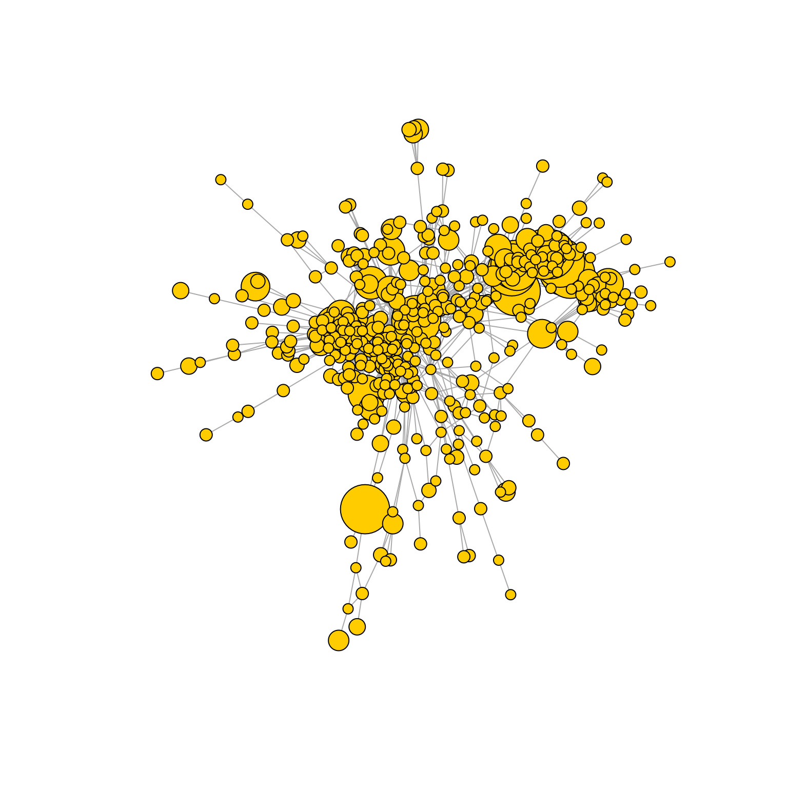
Pruning edges based on a distance and expansion threshold.
AntibodyForests(VGM[[1]],
sequence.type = 'VDJ.cdr3s.aa',
network.algorithm = 'prune.distance.expansion',
pruning.threshold = c(3,0,2),
keep.largest.cc = T,
directed = F,
include.germline = NULL,
network.level = 'global') %>% AntibodyForests_plot(node.label = NULL, node.scale.factor = 4, network.layout = 'nice', show.legend = F)## Warning in vattrs[[name]][index] <- value: number of items to replace is not a
## multiple of replacement length## AntibodyForests object
## 105 sequence nodes across 1 sample(s) and 85 clonotype(s)
## 105 total network nodes
## Sample id(s): s1
## Clonotype id(s): clonotype1, clonotype2, clonotype3, clonotype4, clonotype5, clonotype6, clonotype7, clonotype8, clonotype9, clonotype10, clonotype11, clonotype12, clonotype13, clonotype14, clonotype15, clonotype16, clonotype17, clonotype18, clonotype19, clonotype21, clonotype22, clonotype23, clonotype24, clonotype25, clonotype26, clonotype27, clonotype28, clonotype29, clonotype30, clonotype31, clonotype32, clonotype33, clonotype34, clonotype35, clonotype36, clonotype37, clonotype38, clonotype39, clonotype40, clonotype41, clonotype42, clonotype43, clonotype44, clonotype47, clonotype48, clonotype49, clonotype50, clonotype51, clonotype52, clonotype54, clonotype55, clonotype56, clonotype57, clonotype58, clonotype59, clonotype60, clonotype61, clonotype62, clonotype63, clonotype64, clonotype65, clonotype66, clonotype67, clonotype69, clonotype71, clonotype73, clonotype74, clonotype75, clonotype76, clonotype78, clonotype82, clonotype89, clonotype95, clonotype96, clonotype103, clonotype109, clonotype111, clonotype130, clonotype145, clonotype363, clonotype663, clonotype757, clonotype790, clonotype804, clonotype805
## Networks/analyses available: prune.distance.expansion, plot_ready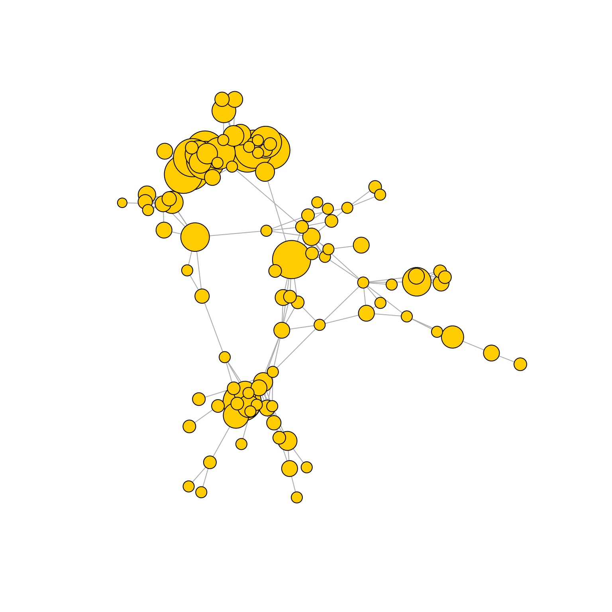
The ‘global’ option
‘global’ is a custom option to easily create whole-repertoire/multi-repertoire similarity networks: it defaults to the ‘prune.distance’ option, while also changing some other parameters to ensure consistency (directed is set to F, include.germline is set to F, network.level is set to ‘global’, keep.largest.cc to T). This option will be further explored in the ‘AntibodyForests for similarity network construction and analysis’ vignette.
AntibodyForests(VGM[[1]],
sequence.type = 'VDJ.cdr3s.aa',
network.algorithm = 'global',
pruning.threshold = 3) %>% AntibodyForests_plot(node.label = NULL, node.scale.factor = 4, network.layout = 'nice', show.legend = F)## Warning in vattrs[[name]][index] <- value: number of items to replace is not a
## multiple of replacement length## AntibodyForests object
## 471 sequence nodes across 1 sample(s) and 353 clonotype(s)
## 471 total network nodes
## Sample id(s): s1
## Clonotype id(s): clonotype1, clonotype2, clonotype3, clonotype4, clonotype5, clonotype6, clonotype7, clonotype8, clonotype9, clonotype10, clonotype11, clonotype12, clonotype13, clonotype14, clonotype15, clonotype16, clonotype17, clonotype18, clonotype19, clonotype21, clonotype22, clonotype23, clonotype24, clonotype25, clonotype26, clonotype27, clonotype28, clonotype29, clonotype30, clonotype31, clonotype32, clonotype33, clonotype34, clonotype35, clonotype36, clonotype37, clonotype38, clonotype39, clonotype40, clonotype41, clonotype42, clonotype43, clonotype44, clonotype45, clonotype46, clonotype47, clonotype48, clonotype49, clonotype50, clonotype51, clonotype52, clonotype53, clonotype54, clonotype55, clonotype56, clonotype57, clonotype58, clonotype59, clonotype60, clonotype61, clonotype62, clonotype63, clonotype64, clonotype65, clonotype66, clonotype67, clonotype68, clonotype69, clonotype70, clonotype71, clonotype73, clonotype74, clonotype75, clonotype76, clonotype77, clonotype78, clonotype79, clonotype80, clonotype81, clonotype82, clonotype83, clonotype85, clonotype86, clonotype87, clonotype88, clonotype89, clonotype90, clonotype91, clonotype92, clonotype93, clonotype94, clonotype95, clonotype96, clonotype97, clonotype98, clonotype99, clonotype100, clonotype101, clonotype102, clonotype103, clonotype104, clonotype105, clonotype106, clonotype107, clonotype108, clonotype109, clonotype110, clonotype111, clonotype112, clonotype113, clonotype114, clonotype115, clonotype116, clonotype117, clonotype118, clonotype119, clonotype120, clonotype121, clonotype122, clonotype123, clonotype124, clonotype125, clonotype126, clonotype127, clonotype128, clonotype129, clonotype130, clonotype131, clonotype132, clonotype133, clonotype134, clonotype135, clonotype136, clonotype137, clonotype138, clonotype139, clonotype140, clonotype141, clonotype142, clonotype143, clonotype144, clonotype145, clonotype146, clonotype147, clonotype148, clonotype149, clonotype150, clonotype151, clonotype152, clonotype153, clonotype154, clonotype155, clonotype156, clonotype157, clonotype158, clonotype159, clonotype160, clonotype161, clonotype162, clonotype163, clonotype164, clonotype165, clonotype166, clonotype167, clonotype169, clonotype170, clonotype171, clonotype172, clonotype173, clonotype174, clonotype175, clonotype176, clonotype177, clonotype179, clonotype180, clonotype181, clonotype182, clonotype183, clonotype184, clonotype185, clonotype186, clonotype187, clonotype188, clonotype189, clonotype190, clonotype191, clonotype192, clonotype193, clonotype194, clonotype195, clonotype196, clonotype197, clonotype198, clonotype199, clonotype200, clonotype201, clonotype202, clonotype203, clonotype204, clonotype205, clonotype206, clonotype207, clonotype208, clonotype209, clonotype210, clonotype211, clonotype212, clonotype213, clonotype214, clonotype215, clonotype216, clonotype217, clonotype218, clonotype219, clonotype220, clonotype221, clonotype222, clonotype223, clonotype224, clonotype225, clonotype226, clonotype227, clonotype228, clonotype230, clonotype231, clonotype232, clonotype233, clonotype234, clonotype235, clonotype236, clonotype237, clonotype238, clonotype239, clonotype240, clonotype241, clonotype242, clonotype243, clonotype244, clonotype245, clonotype246, clonotype247, clonotype248, clonotype249, clonotype250, clonotype251, clonotype252, clonotype253, clonotype254, clonotype255, clonotype256, clonotype257, clonotype258, clonotype259, clonotype260, clonotype261, clonotype262, clonotype263, clonotype264, clonotype265, clonotype266, clonotype267, clonotype310, clonotype317, clonotype329, clonotype348, clonotype353, clonotype363, clonotype370, clonotype373, clonotype385, clonotype387, clonotype388, clonotype391, clonotype411, clonotype413, clonotype421, clonotype436, clonotype445, clonotype466, clonotype471, clonotype484, clonotype488, clonotype494, clonotype495, clonotype496, clonotype497, clonotype498, clonotype505, clonotype508, clonotype510, clonotype524, clonotype546, clonotype553, clonotype554, clonotype569, clonotype575, clonotype583, clonotype584, clonotype591, clonotype594, clonotype598, clonotype600, clonotype601, clonotype603, clonotype605, clonotype631, clonotype632, clonotype633, clonotype634, clonotype641, clonotype643, clonotype658, clonotype663, clonotype668, clonotype671, clonotype678, clonotype695, clonotype703, clonotype725, clonotype727, clonotype728, clonotype735, clonotype737, clonotype746, clonotype750, clonotype757, clonotype772, clonotype781, clonotype790, clonotype798, clonotype799, clonotype804, clonotype805, clonotype806, clonotype809, clonotype820, clonotype821, clonotype832, clonotype836, clonotype841, clonotype843, clonotype854, clonotype858, clonotype859, clonotype861, clonotype866, clonotype868, clonotype878, clonotype879, clonotype881, clonotype882, clonotype884, clonotype893
## Networks/analyses available: prune.distance, plot_ready
3.4. Creating minimum spanning trees via igraph::mst()
Lastly, another tree inference option is the minimum spanning tree function available in the igraph package.
AntibodyForests(VGM[[1]],
network.algorithm = 'mst',
specific.networks = 'clonotype7') %>% AntibodyForests_plot(node.label = 'rank', node.scale.factor = 8)## AntibodyForests object
## 35 sequence nodes across 1 sample(s) and 1 clonotype(s)
## 35 total network nodes
## Sample id(s): s1
## Clonotype id(s): clonotype7
## Networks/analyses available: mst, plot_ready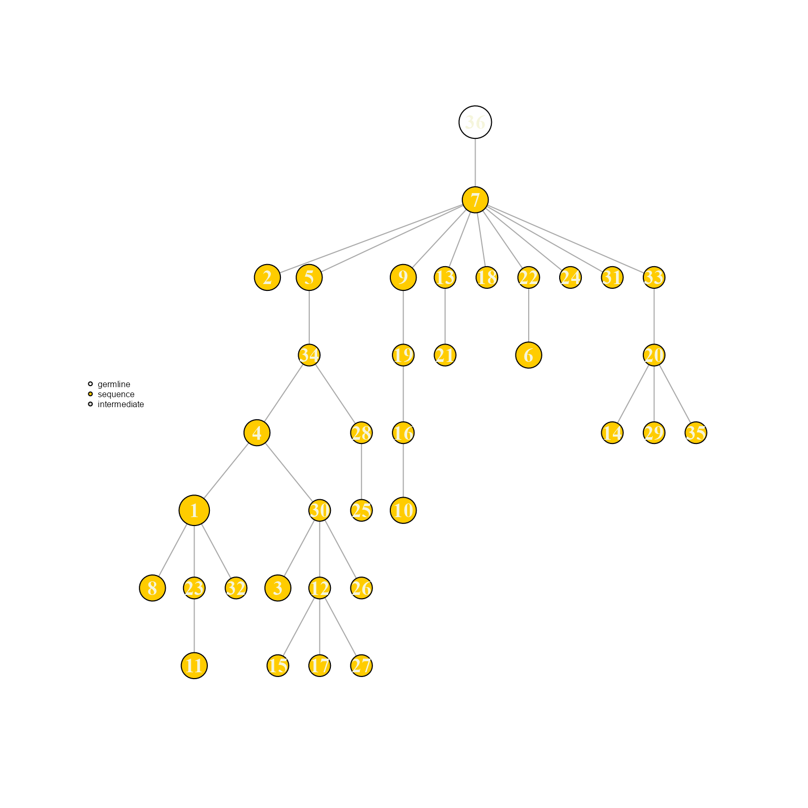
3.5 Filtering options
There are several methods to filter your networks:
cell.limits and node.limits impose an upper and lower bound on the number of cells per sequence (otherwise those sequences are removed from the network) and number of nodes per intraclonal network (if lower, remove the network entirely, higher - removes the least expanded nodes to get to the upper bound).
filter.na.features removes networks if all their feature values are NA (for the VDJ column mentioned).
filter.specific.features ensures at least a specific feature value of a feature column is present (e.g., filter.specific.features = list(‘OVA_binder’, ‘yes’) for networks with at least one OVA binder node).
networks <- AntibodyForests(VGM[[1]],
network.algorithm = 'tree',
node.limits = list(5,NULL), #only a lower bound of 5, no upper bound
specific.networks = 3) #selects the top 5 networks
networks## $s1
## $s1$clonotype7
## AntibodyForests object
## 35 sequence nodes across 1 sample(s) and 1 clonotype(s)
## 35 total network nodes
## Sample id(s): s1
## Clonotype id(s): clonotype7
## Networks/analyses available: tree
##
##
##
## $s1$clonotype8
## AntibodyForests object
## 27 sequence nodes across 1 sample(s) and 1 clonotype(s)
## 27 total network nodes
## Sample id(s): s1
## Clonotype id(s): clonotype8
## Networks/analyses available: tree
##
##
##
## $s1$clonotype9
## AntibodyForests object
## 15 sequence nodes across 1 sample(s) and 1 clonotype(s)
## 15 total network nodes
## Sample id(s): s1
## Clonotype id(s): clonotype9
## Networks/analyses available: tree
networks <- AntibodyForests(VGM[[1]],
network.algorithm = 'tree',
cell.limits = list(10,NULL), #only a lower bound of 10, no upper bound
specific.networks = 3) #selects the top 5 networks
networks## $s1
## $s1$clonotype1
## AntibodyForests object
## 1 sequence nodes across 1 sample(s) and 1 clonotype(s)
## 1 total network nodes
## Sample id(s): s1
## Clonotype id(s): clonotype1
## Networks/analyses available: tree
##
##
##
## $s1$clonotype2
## AntibodyForests object
## 2 sequence nodes across 1 sample(s) and 1 clonotype(s)
## 2 total network nodes
## Sample id(s): s1
## Clonotype id(s): clonotype2
## Networks/analyses available: tree
##
##
##
## $s1$clonotype3
## AntibodyForests object
## 3 sequence nodes across 1 sample(s) and 1 clonotype(s)
## 3 total network nodes
## Sample id(s): s1
## Clonotype id(s): clonotype3
## Networks/analyses available: tree3.6 Network level options
Networks can be built at different levels/for different groups across the VDJ object:
The default option for the tree inference algorithms is network.level = ‘intraclonal’ - this builds a network per clonotype, per sample - the resulting AntibodyForests object is a nested list where trees[[1]][[2]] is the network for the first sample, second clonotype.
networks <- AntibodyForests(VGM[[1]],
network.algorithm = 'tree',
network.level = 'intraclonal',
specific.networks = 3)
networks## $s1
## $s1$clonotype1
## AntibodyForests object
## 1 sequence nodes across 1 sample(s) and 1 clonotype(s)
## 1 total network nodes
## Sample id(s): s1
## Clonotype id(s): clonotype1
## Networks/analyses available: tree
##
##
##
## $s1$clonotype2
## AntibodyForests object
## 2 sequence nodes across 1 sample(s) and 1 clonotype(s)
## 2 total network nodes
## Sample id(s): s1
## Clonotype id(s): clonotype2
## Networks/analyses available: tree
##
##
##
## $s1$clonotype3
## AntibodyForests object
## 4 sequence nodes across 1 sample(s) and 1 clonotype(s)
## 4 total network nodes
## Sample id(s): s1
## Clonotype id(s): clonotype3
## Networks/analyses available: tree‘global’ will pool all clonotypes across all samples, creating a single ‘global’ network.
networks <- AntibodyForests(VGM[[1]],
network.algorithm = 'tree',
network.level = 'global',
specific.networks = 3)
networks## AntibodyForests object
## 7 sequence nodes across 1 sample(s) and 3 clonotype(s)
## 7 total network nodes
## Sample id(s): s1
## Clonotype id(s): clonotype1, clonotype2, clonotype3
## Networks/analyses available: tree
networks %>% AntibodyForests_plot(node.label = NULL, node.color = 'clonotype_id', node.scale.factor = 4)## AntibodyForests object
## 7 sequence nodes across 1 sample(s) and 3 clonotype(s)
## 7 total network nodes
## Sample id(s): s1
## Clonotype id(s): clonotype1, clonotype2, clonotype3
## Networks/analyses available: tree, plot_ready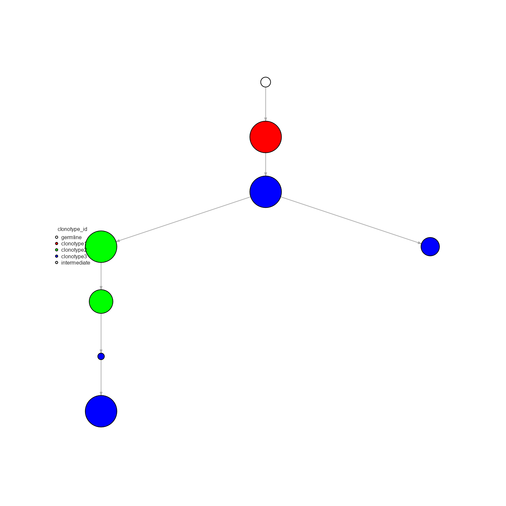
The other options include ‘forest.global’, ‘forest.per.sample’, ‘global.clonotype’, which are thoroughly described in the AntibodyForests function documentation.
4. A look at the AntibodyForests object
As we have seen, the resulting output of the AntibodyForests function is an AntibodyForests object or a nested list of such objects. This acts as a way to store important parameters (e.g., cell barcodes per sequence, unique sequence, feature names) and downstream analyses (heterogeneous graphs, metric dataframes) for easier accessibility and better function pipelines.
networks <- AntibodyForests(VGM[[1]],
network.algorithm = 'tree',
node.limits = list(5, NULL),
specific.networks = 3)
networks## $s1
## $s1$clonotype7
## AntibodyForests object
## 35 sequence nodes across 1 sample(s) and 1 clonotype(s)
## 35 total network nodes
## Sample id(s): s1
## Clonotype id(s): clonotype7
## Networks/analyses available: tree
##
##
##
## $s1$clonotype8
## AntibodyForests object
## 27 sequence nodes across 1 sample(s) and 1 clonotype(s)
## 27 total network nodes
## Sample id(s): s1
## Clonotype id(s): clonotype8
## Networks/analyses available: tree
##
##
##
## $s1$clonotype9
## AntibodyForests object
## 15 sequence nodes across 1 sample(s) and 1 clonotype(s)
## 15 total network nodes
## Sample id(s): s1
## Clonotype id(s): clonotype9
## Networks/analyses available: tree
networks$s1$clonotype7## AntibodyForests object
## 35 sequence nodes across 1 sample(s) and 1 clonotype(s)
## 35 total network nodes
## Sample id(s): s1
## Clonotype id(s): clonotype7
## Networks/analyses available: treeWe can also access the attributes of a single AntibodyForests object. For example, the igraph object created is stored under the tree attribute, whereas the cell barcodes per sequence under barcode.
networks$s1$clonotype7@tree## IGRAPH 91fd1d8 D-W- 36 35 --
## + attr: label (v/n), network_sequences (v/c), cell_number (v/n),
## | node_type (v/c), most_expanded (v/c), hub (v/c), clonotype_id (v/c),
## | sample_id (v/c), cell_barcodes (v/x), distance_from_germline (v/n),
## | leaf (v/c), weight (e/n)
## + edges from 91fd1d8:
## [1] 1-> 8 1->11 1->32 4-> 1 4->30 4->34 5->25 7-> 2 7-> 5 7-> 9
## [11] 7->13 7->18 7->22 7->24 7->31 7->33 9->19 11->23 12->15 12->17
## [21] 12->27 13->21 16->10 19->16 20->14 20->29 20->35 22-> 6 25->28 28-> 4
## [31] 30-> 3 30->12 30->26 33->20 36-> 7
networks$s1$clonotype7@barcodes[1:5]## [[1]]
## [1] "s1_AACGTTGCAACTTGAC-1" "s1_AACTCTTGTACCGTAT-1" "s1_GCAATCAAGACTTGAA-1"
## [4] "s1_GCTGCGAAGTGAACAT-1"
##
## [[2]]
## [1] "s1_ACGAGCCCATCGGGTC-1" "s1_TGCCCATTCTTGCATT-1"
##
## [[3]]
## [1] "s1_ACTTACTGTAGGGACT-1" "s1_GAAACTCCAGGGTACA-1"
##
## [[4]]
## [1] "s1_AGATTGCTCATGTCTT-1" "s1_CATTCGCTCAGTGTTG-1"
##
## [[5]]
## [1] "s1_AGCAGCCGTGTGAAAT-1" "s1_TCACGAATCAGTCAGT-1"5. Plotting the resulting trees/networks via AntibodyForests_plot
The AntibodyForests plotting function is highly customizable (unique node colors, gradient node colors, pie-chart nodes, different network layouts, etc.,). It takes as input an AntibodyForests object or a nested list of such objects and outputs a list of plots or plot-ready AntibodyForests objects - the resulting plots can also be saved as PDF.
5.1. Adding new node-level features to plot
We will first need to add those features when creating the AntibodyForests objects. This is done via the node.features parameter, which takes as input a vector of strings denoting column names in the VDJ object. We will add the isotype and Seurat clusters as node features.
network <- AntibodyForests(VGM[[1]],
network.algorithm = 'tree',
node.features = c('VDJ_cgene', 'seurat_clusters'),
node.limits = list(5, NULL),
specific.networks = 1) #picks a single network (with highest cell counts)5.2. Changing the node color
As feature values are pooled by each cell barcode per sequence, we could have multiple different values per one sequence. When coloring our nodes, we pick the most frequent feature (highest number of cells). We can also plot our networks with pie-chart shapes to see the overall feature distribution by setting node.shape to ‘pie’.
plot_network <- network %>% AntibodyForests_plot(node.color = 'VDJ_cgene', node.scale.factor = 8)We can see how a new slot has been added to our AntibodyForests object: plot_ready, which is the same igraph object with the plot annotations (node colors, sizes, etc.,) added.
plot_network## AntibodyForests object
## 35 sequence nodes across 1 sample(s) and 1 clonotype(s)
## 35 total network nodes
## Sample id(s): s1
## Clonotype id(s): clonotype7
## Networks/analyses available: tree, plot_ready
plot(plot_network@plot_ready)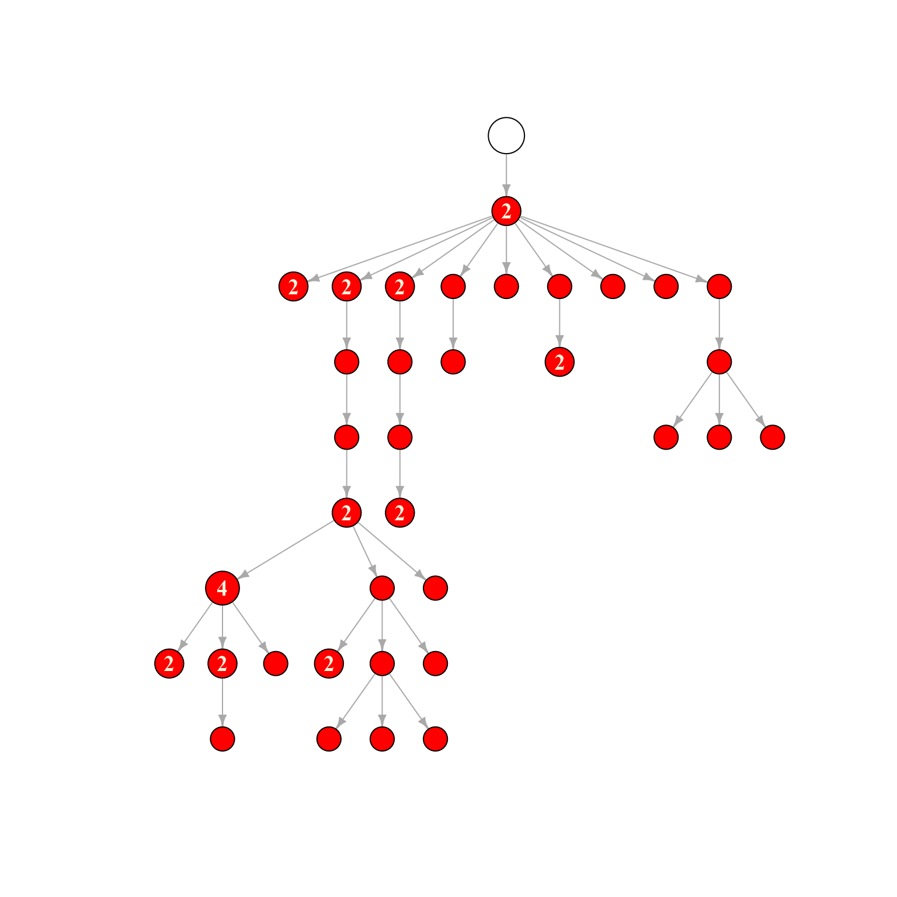
network %>% AntibodyForests_plot(node.color = 'seurat_clusters', node.scale.factor = 8)## AntibodyForests object
## 35 sequence nodes across 1 sample(s) and 1 clonotype(s)
## 35 total network nodes
## Sample id(s): s1
## Clonotype id(s): clonotype7
## Networks/analyses available: tree, plot_ready
network %>% AntibodyForests_plot(node.color = 'seurat_clusters', node.shape = 'pie', node.scale.factor = 8)## AntibodyForests object
## 35 sequence nodes across 1 sample(s) and 1 clonotype(s)
## 35 total network nodes
## Sample id(s): s1
## Clonotype id(s): clonotype7
## Networks/analyses available: tree, plot_ready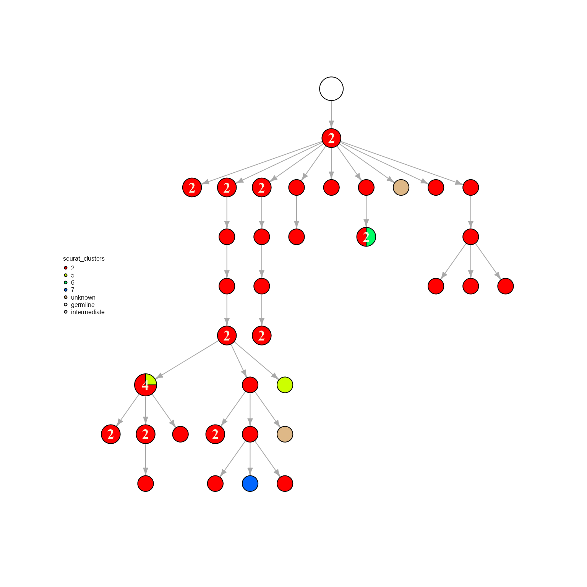
Moreover, we can select specific node color via the specific.node.colors parameters (which takes as input a named vector of our desired colors).
network %>% AntibodyForests_plot(node.color = 'VDJ_cgene', node.scale.factor = 8, specific.node.colors = c('IGHA' = 'blue'))## AntibodyForests object
## 35 sequence nodes across 1 sample(s) and 1 clonotype(s)
## 35 total network nodes
## Sample id(s): s1
## Clonotype id(s): clonotype7
## Networks/analyses available: tree, plot_ready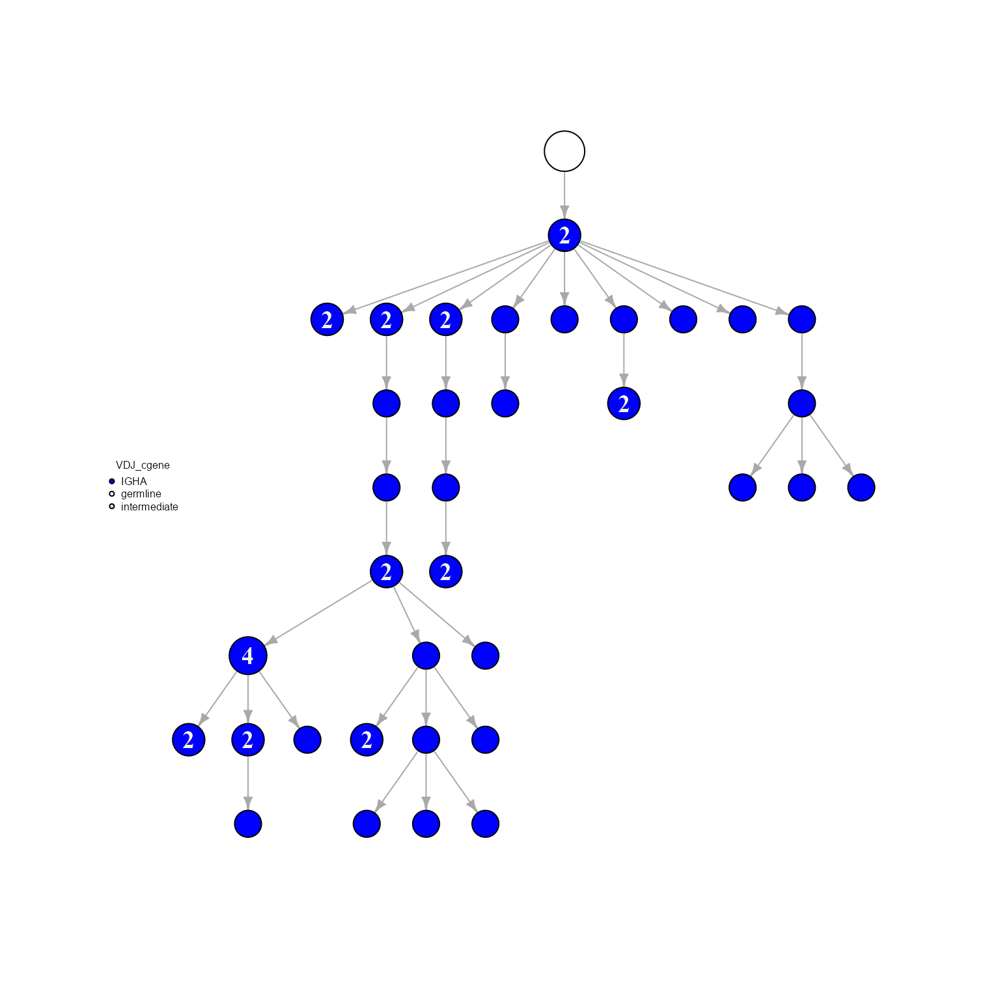
5.3. Changing the node sizes
The node sizes are proportional to the number of cells per sequence. These can also be scaled by centrality metrics: ‘scaleByCloseness’ - closeness centrality; ‘scaleByBetweenness’ - betweenness, ‘scaleByEigen’ - eigenvector centrality, ‘scaleByExpansion’ - default option to scale by cell count per nodes.
Node sizes can further be modulated by node.scale.factor and max.node.size.
network %>% AntibodyForests_plot(node.color = 'VDJ_cgene', node.size = 'scaleByCloseness', node.scale.factor = 1000)## AntibodyForests object
## 35 sequence nodes across 1 sample(s) and 1 clonotype(s)
## 35 total network nodes
## Sample id(s): s1
## Clonotype id(s): clonotype7
## Networks/analyses available: tree, plot_ready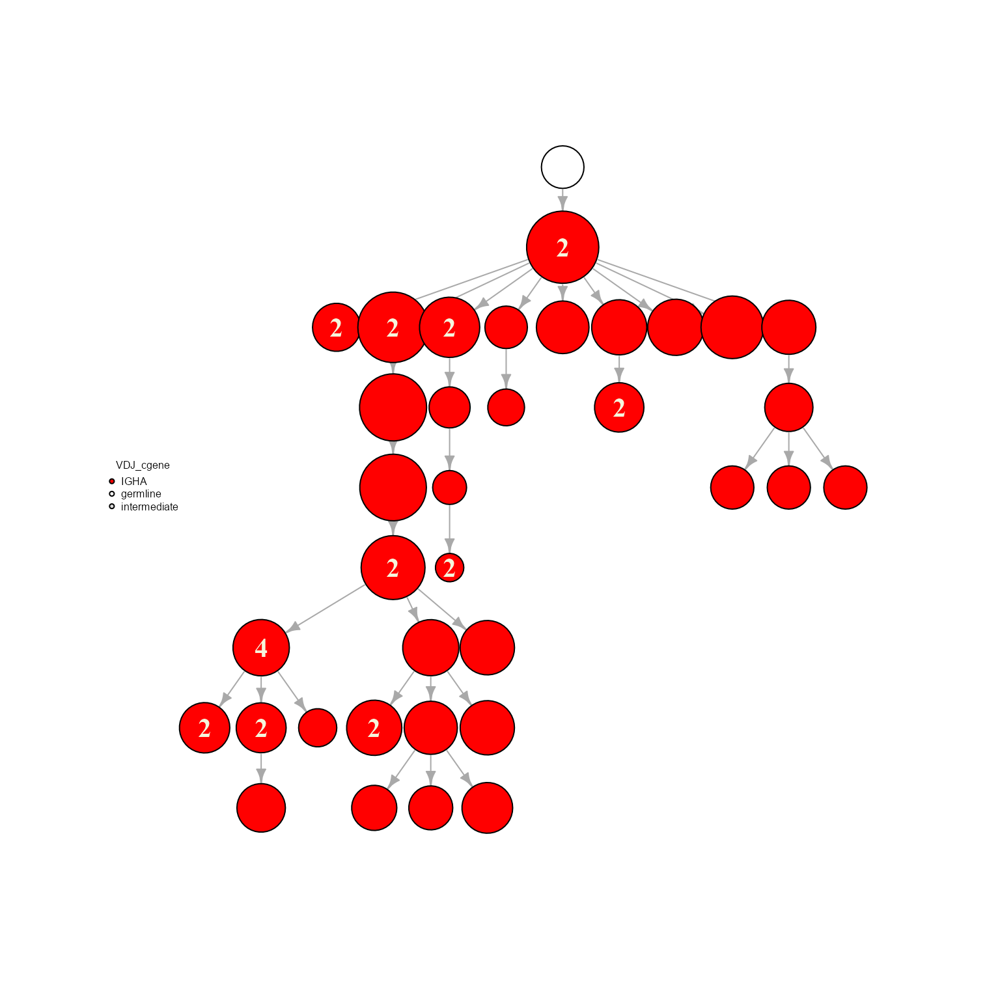
6. Infer intermediate nodes via AntibodyForests_expand_intermediates
Intermediate nodes can be inferred by expanding the edges of the existing Levenshtein-distance network: for example, if two adjacent nodes have an edge of weight = 3 (LV distance = 3), 2 new intermediate nodes will be added in-between, and all resulting edges will have weight = 1.
network %>% AntibodyForests_expand_intermediates() %>% AntibodyForests_plot(node.scale.factor = 4)## AntibodyForests object
## 35 sequence nodes across 1 sample(s) and 1 clonotype(s)
## 35 total network nodes
## Sample id(s): s1
## Clonotype id(s): clonotype7
## Networks/analyses available: tree, plot_ready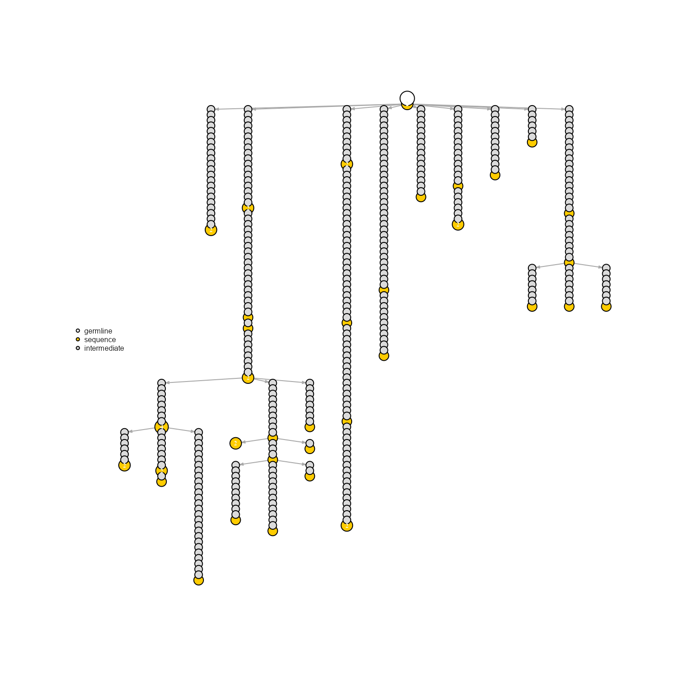
7. Join trees/networks via AntibodyForests_join_trees
Networks can be joined into a single igraph object for downstream analyses or better visualization. Moreover, AntibodyForests_join_trees includes options for joining trees at the same germline, all documented in the AntibodyForests_join_trees function.
joined_network <- AntibodyForests(VGM[[1]],
network.algorithm = 'tree',
node.limits = list(5, NULL),
specific.networks = 3) %>%
AntibodyForests_join_trees() %>%
AntibodyForests_plot(node.color = 'clonotype_id')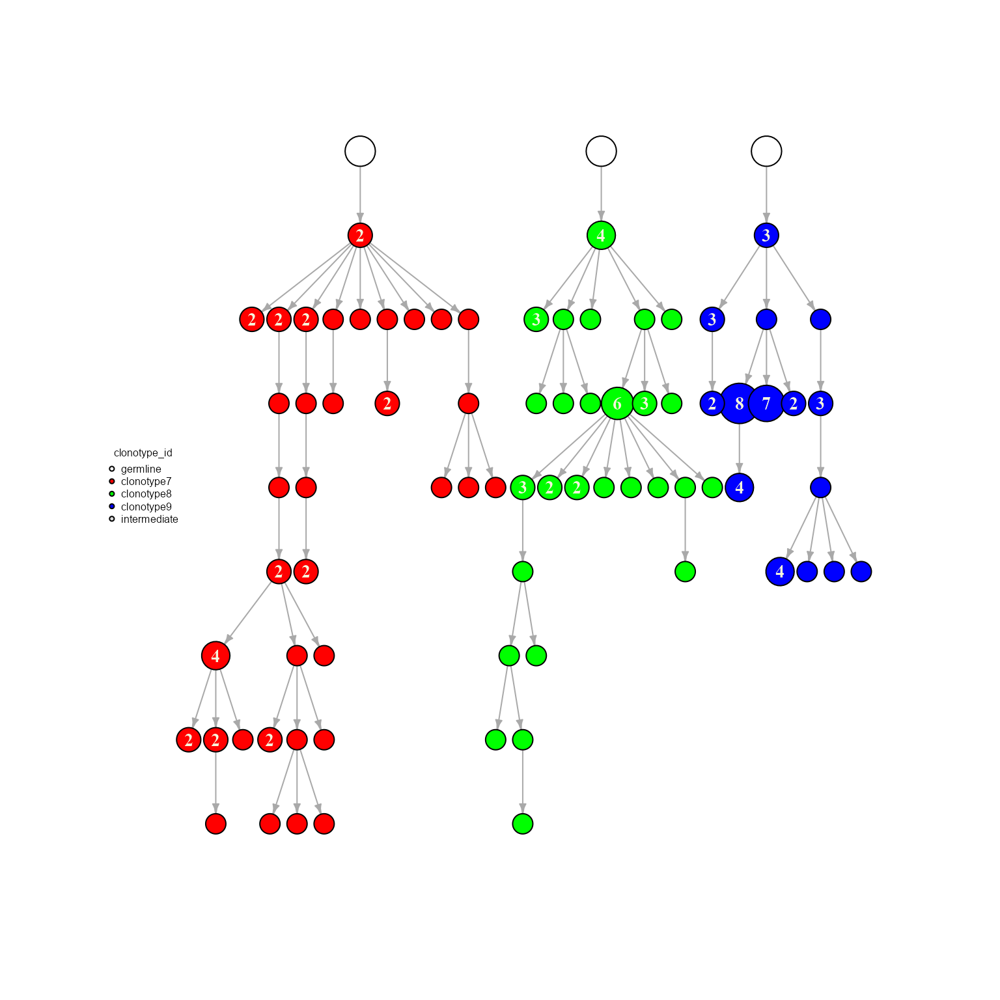
joined_network## AntibodyForests object
## 77 sequence nodes across 1 sample(s) and 3 clonotype(s)
## 77 total network nodes
## Sample id(s): s1
## Clonotype id(s): clonotype7, clonotype8, clonotype9
## Networks/analyses available: tree, plot_ready8. Additional network types
8.1. AntibodyForests_infer_ancestral: Phylogenetic inference and ancestral sequence reconstruction via IQ-TREE
We can use the IQ-TREE software to infer phylogenies and reconstruct ancestral sequences. The resulting AntibodyForests object can then be analyzed normally (as it is compatible with all downstream analyses implemented in AntibodyForests).
We will need to download the latest versions of IQ-TREE and MAFFT, and specify the IQ-TREE directory. If MAFFT is not available, AntibodyForests_infer_ancestral should default to using an alignment option available in the ape package (e.g., ape::clustal())
inferred_tree <- AntibodyForests(VGM[[1]],
network.algorithm = 'tree',
node.limits = list(5, NULL),
specific.networks = 1) %>%
AntibodyForests_infer_ancestral(alignment.method = 'mafft', iqtree.directory = '/Users/tudorcotet/Desktop/AntibodyForests/iqtree-1.6.12-MacOSX') %>%
AntibodyForests_plot(specific.node.colors = c('inferred' = 'orange'))
df <- igraph::as_data_frame(inferred_tree@tree, what = 'vertices')
df$network_sequences[df$node_type == 'inferred'][1:5]Networks can also be converted into phylo object using AntibodyForests_phylo. A new attribute called phylo is added for these objects.
network_w_phylo <- AntibodyForests(VGM[[1]],
network.algorithm = 'tree',
node.limits = list(5, NULL),
specific.networks = 1) %>%
AntibodyForests_phylo()
network_w_phylo## AntibodyForests object
## 35 sequence nodes across 1 sample(s) and 1 clonotype(s)
## 35 total network nodes
## Sample id(s): s1
## Clonotype id(s): clonotype7
## Networks/analyses available: tree, phylo
plot(network_w_phylo@phylo)8.2. AntibodyForests_dynamics: Dynamic/temporal networks
Dynamic networks can be assembled using AntibodyForests_dynamics: this function inverts the nested list = output of AntibodyForests - the main list preserves only the clonotypes found in all timepoints, while the secondary lists include the objects per timepoint/sample. Moreover, each of such objects pools together all nodes across all respective timepoints, but only keeps the edges for its own timepoint. This facilitates downstream analyses (e.g., tracking a specific node across multiple timepoints).
We recommend to use this function after ensure your clonotype definitions are consistent across all timepoints (e.g., clonotype 1 in timepoint/sample 1 has the same VDJ_cdr3_aa as clonotype 1 in timepoint/sample 2). You can use the VDJ_call_enclone function to merge multiple samples together and reclonotype via the enclone software.
We will showcase this on a dataset with more samples/timepoints.
PlatypusDB_fetch(PlatypusDB.links = c("neumeier2021b//VDJmatrix"),
load.to.enviroment = T, combine.objects = F)## 2022-08-17 20:51:35: Starting download of neumeier2021b__VDJmatrix.RData...## [1] "neumeier2021b__VDJmatrix"
OVA_VDJ <- neumeier2021b__VDJmatrix[[1]]
dynamic_networks <- AntibodyForests(OVA_VDJ,
network.algorithm = 'tree',
sequence.type = 'cdr3.nt',
include.germline = NULL,
node.limits = list(5, NULL)) %>%
AntibodyForests_dynamics(timepoints.order = c('s2', 's1', 's3', 's4')) #setting a predefined timepoints order in the resulting object
dynamic_networks## $clonotype11
## $clonotype11$s2
## AntibodyForests object
## 9 sequence nodes across 1 sample(s) and 1 clonotype(s)
## 9 total network nodes
## Sample id(s): s2
## Clonotype id(s): clonotype11
## Networks/analyses available: tree, dynamic
##
##
##
## $clonotype11$s1
## AntibodyForests object
## 8 sequence nodes across 1 sample(s) and 1 clonotype(s)
## 8 total network nodes
## Sample id(s): s1
## Clonotype id(s): clonotype11
## Networks/analyses available: tree, dynamic
##
##
##
## $clonotype11$s3
## AntibodyForests object
## 10 sequence nodes across 1 sample(s) and 1 clonotype(s)
## 10 total network nodes
## Sample id(s): s3
## Clonotype id(s): clonotype11
## Networks/analyses available: tree, dynamic
##
##
##
## $clonotype11$s4
## AntibodyForests object
## 8 sequence nodes across 1 sample(s) and 1 clonotype(s)
## 8 total network nodes
## Sample id(s): s4
## Clonotype id(s): clonotype11
## Networks/analyses available: tree, dynamicWe can see how only clonotype 11 is shared across all samples. We can also plot a single dynamic network to see how it is configured. Make sure graph.type is set to ‘dynamic’ when plotting our new object.
dynamic_networks %>% AntibodyForests_plot(graph.type = 'dynamic',
node.color = 'sample_id',
node.label = 'cells',
network.layout = 'nice')## $clonotype11
## $clonotype11$s2
## AntibodyForests object
## 9 sequence nodes across 1 sample(s) and 1 clonotype(s)
## 9 total network nodes
## Sample id(s): s2
## Clonotype id(s): clonotype11
## Networks/analyses available: tree, plot_ready, dynamic
##
##
##
## $clonotype11$s1
## AntibodyForests object
## 8 sequence nodes across 1 sample(s) and 1 clonotype(s)
## 8 total network nodes
## Sample id(s): s1
## Clonotype id(s): clonotype11
## Networks/analyses available: tree, plot_ready, dynamic
##
##
##
## $clonotype11$s3
## AntibodyForests object
## 10 sequence nodes across 1 sample(s) and 1 clonotype(s)
## 10 total network nodes
## Sample id(s): s3
## Clonotype id(s): clonotype11
## Networks/analyses available: tree, plot_ready, dynamic
##
##
##
## $clonotype11$s4
## AntibodyForests object
## 8 sequence nodes across 1 sample(s) and 1 clonotype(s)
## 8 total network nodes
## Sample id(s): s4
## Clonotype id(s): clonotype11
## Networks/analyses available: tree, plot_ready, dynamic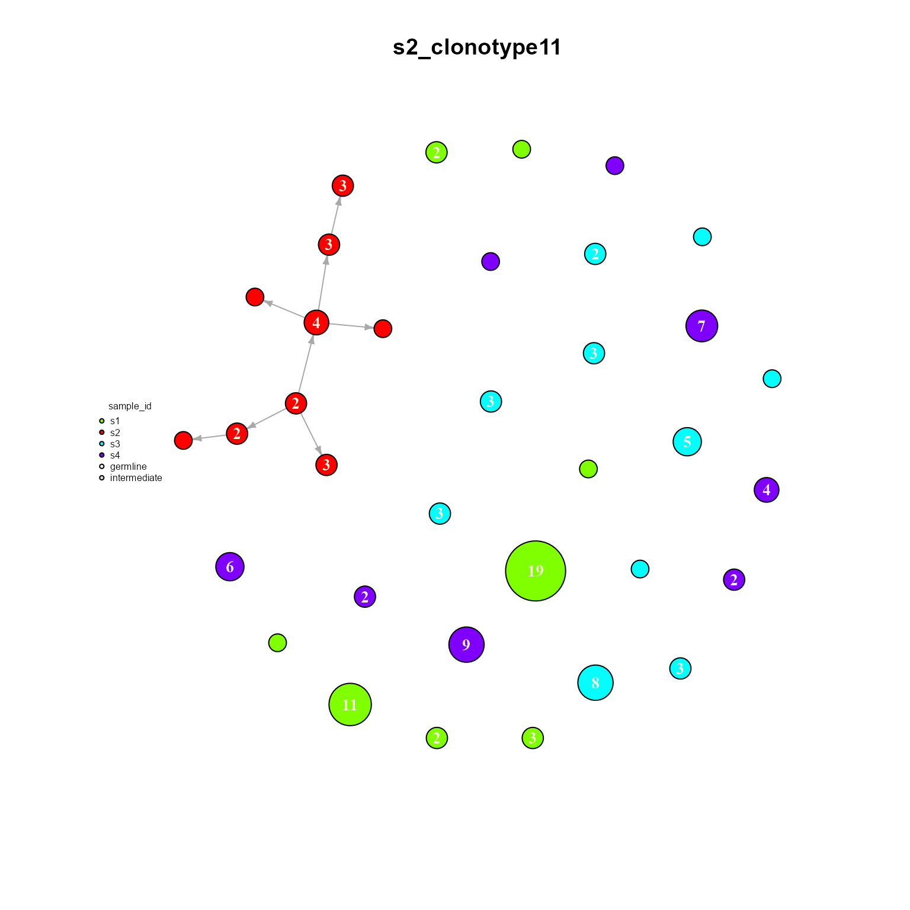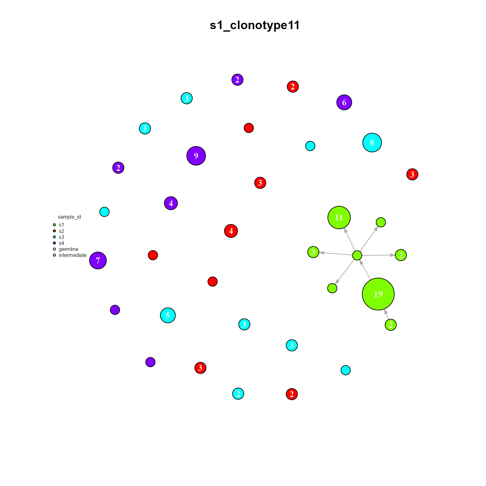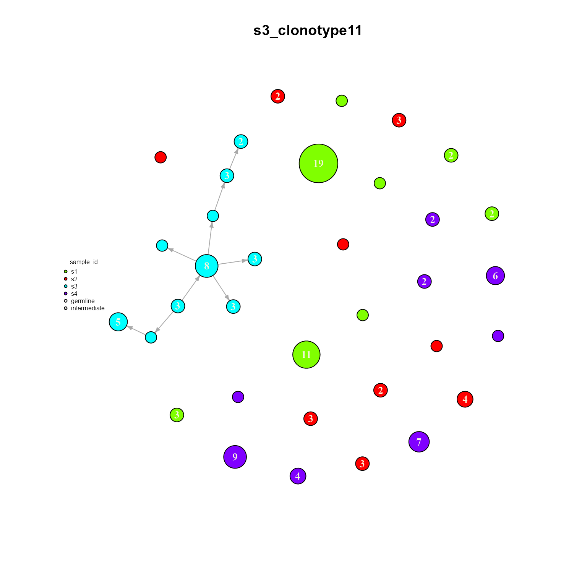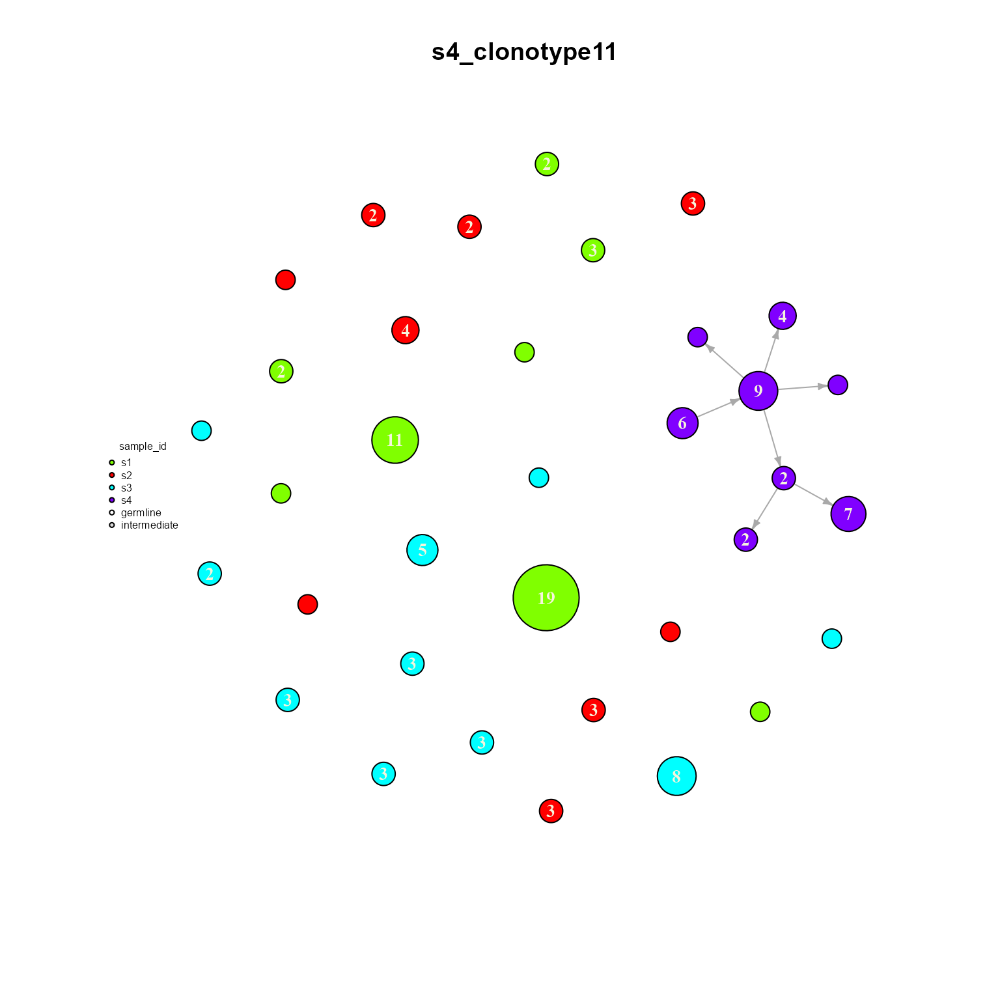
8.3. AntibodyForests_heterogeneous: Heterogeneous/bipartite networks
AntibodyForests allows for the inference of heterogeneous networks: these multimodal networks consists of a pre-built sequence network (e.g., via our evolutionary tree algorithm) and the SNN/KNN cell graphs computed by Seurat (https://satijalab.org/seurat/reference/findneighbors). Interlevel edges are added between sequences and their respective cell barcodes.
This framework allows for the visualization of more complex features (e.g., isotypes along cell clusters), with plans for more analyses to be added to make use of this network type.
To plot these bipartite networks, the Seurat/VGM[[2]] object must be included in the AntibodyForests_heterogeneous function, as well as the specified graph type in AntibodyForests_plot should be ‘heterogeneous’.
bipartite_network <- AntibodyForests(VGM[[1]],
network.algorithm = 'tree',
node.limits = list(5, NULL),
specific.networks = 1,
node.features = 'VDJ_cgene') %>%
AntibodyForests_heterogeneous(VGM[[2]], snn.threshold = 1/2) %>% #setitng up the pruning threshold for the SNN cell graph obtained from Seurat (https://satijalab.org/seurat/reference/findneighbors)
AntibodyForests_plot(graph.type = 'heterogeneous', node.color = 'VDJ_cgene', node.label = NULL)## Computing nearest neighbor graph## Computing SNN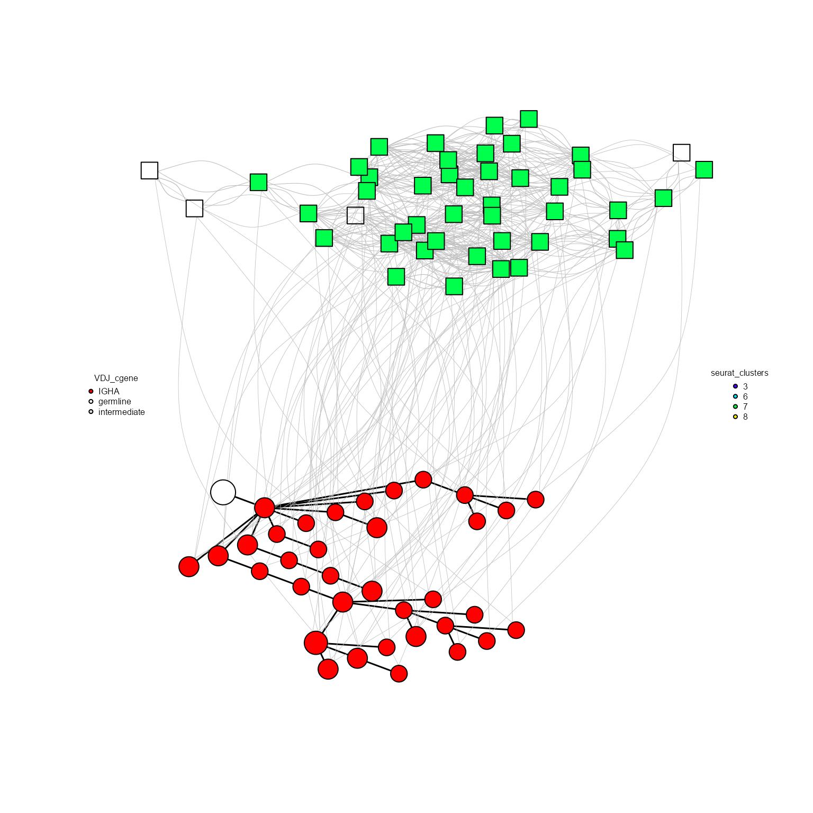
bipartite_network## AntibodyForests object
## 35 sequence nodes across 1 sample(s) and 1 clonotype(s)
## 35 total network nodes
## Sample id(s): s1
## Clonotype id(s): clonotype7
## Networks/analyses available: tree, plot_ready, heterogeneous
bipartite_network@heterogeneous## IGRAPH a9a95f8 UNWB 82 629 --
## + attr: name (v/c), network_sequences (v/c), cell_number (v/n),
## | node_type (v/c), most_expanded (v/c), hub (v/c), clonotype_id (v/c),
## | sample_id (v/c), cell_barcodes (v/x), distance_from_germline (v/n),
## | leaf (v/c), VDJ_cgene (v/x), VDJ_cgene_counts (v/x), type (v/c),
## | seurat_clusters (v/n), lvl (v/n), weight (e/n), type (e/c)
## + edges from a9a95f8 (vertex names):
## [1] sequence1--sequence8 sequence1--sequence11 sequence1--sequence32
## [4] sequence1--sequence4 sequence4--sequence30 sequence4--sequence34
## [7] sequence5--sequence25 sequence2--sequence7 sequence5--sequence7
## [10] sequence7--sequence9 sequence7--sequence13 sequence7--sequence18
## + ... omitted several edgesAs the visualization via igraph::plot.igraph is often limited, we can plot these bipartite networks using the ggraph and graphlayouts packages. We will also highlight the interlevel connections between the most expanded sequence node and its corresponding cells.
library(ggraph)
library(graphlayouts)
g <- bipartite_network@plot_ready
tree_layout <- purrr::partial(igraph::layout_as_tree, root = which(igraph::V(g)$node_type == 'germline'))
xy <- layout_as_multilevel(g,
type = "separate",
FUN1 = tree_layout,
FUN2 = graphlayouts::layout_with_stress,
alpha = 25, beta = 45
)
sequence_color_list <- c("IGHA" = "red", "germline" = "black")
cells_color_list <- c(
"#E99093", "#1A5878", "#C44237", "#AD8941",
"#50594B", "#8968CD", "#9ACD32"
)
ggraph(g, "manual", x = xy[, 1], y = xy[, 2]) +
geom_edge_link0(
aes(filter = (node1.lvl == 1 & node2.lvl == 1)),
edge_colour = "black",
alpha = 0.5,
edge_width = 0.3
) +
geom_edge_link0(
aes(filter = (node1.lvl != node2.lvl)),
alpha = 0.5,
edge_width = 0.05,
edge_colour = "gray24"
) +
geom_edge_link0(
aes(filter = (node1.lvl == 2 &
node2.lvl == 2), edge_width = weight),
edge_colour = "black",
alpha = 0.1
)+
geom_edge_link0(
aes(filter = (node1.most_expanded == 'yes' & #We can also highlight the interlevel edges connecting the most expanded node to its cells
node2.lvl == 2 & node1.lvl != node2.lvl)),
edge_colour = "blue",
alpha = 0.8
)+
scale_edge_width(range = c(0.2, 2)) +
geom_node_point(aes(filter = (lvl == 1), color = unlist(VDJ_cgene), size = cell_number * 2)) +
geom_node_point(aes(filter = lvl == 2, fill = as.factor(seurat_clusters), size = cell_number * 3), shape = 22) +
scale_color_manual(values = sequence_color_list) +
scale_fill_manual(values = cells_color_list) +
scale_shape_manual(values = c(21, 22)) +
theme_graph() +
theme(legend.position = 'none') +
coord_cartesian(clip = "off", expand = TRUE)9. Network analysis methods implemented in AntibodyForests
Several network analysis methods/algorithms have been implemented in AntibodyForests, with plans to extend them to the heterogeneous and dynamic graph types.
9.1. Obtaining node metric via AntibodyForests_metrics
Node-level metrics can be calculated via AntibodyForests_metrics for a list of AntibodyForests objects or a single object. The metrics can be selected via a vector of strings in the metrics parameter. Moreover, for bipartite networks, metrics can be calculated for the whole graph or for each segment (sequence graph and cell graph) separately. This can be done by setting separate.bipartite to T and graph.type to ‘heterogeneous’.
The currently implemented node metrics are: 1. Betweenness centrality - ‘betweenness’ 2. Closeness centrality - ‘closeness’ 3. Eigenvector centrality - ‘eigenvector’ 4. Authority score - ‘authority’ 5. Local and average clustering coefficients - ‘local_cluster_coefficient’, ‘average_cluster_coefficient’ 6. Strength or weighted vertex degree - ‘strength’ 7. Degree - ‘degree’ 8. Daughter nodes for directed graphs - ‘daughters’ 9. Vertex eccentricity (shortest path distance from the farthest other node in the graph) - ‘eccentricity’ 10. Pagerank algorithm values - ‘pagerank’ 11. Shortest (weighted) paths from germline - ‘path_from_germline’, ‘weighted_path_from_germline’ 12. Shortest(weighted) paths from the most expanded node - ‘path_from_most_expanded’, ‘weighted_path_from_most_expanded’, 13. Shortest(weighted) paths from the hub node (highest degree) - ‘path_from_hub’, ‘weighted_path_from_hub’
By default, all of these metrics will be computed per graph, with the possibility to select only a subset of metrics in the metrics parameter.
networks_with_metrics <- AntibodyForests(VGM[[1]],
network.algorithm = 'tree',
node.limits = list(5, NULL),
specific.networks = 5,
node.features = c('VDJ_cgene','seurat_clusters')) %>%
AntibodyForests_metrics(graph.type = 'tree')The resulting object(s) will contain a metrics slot - a dataframe of metric values per node for easier downstream statistics.
networks_with_metrics[[1]][[1]]## AntibodyForests object
## 35 sequence nodes across 1 sample(s) and 1 clonotype(s)
## 35 total network nodes
## Sample id(s): s1
## Clonotype id(s): clonotype7
## Networks/analyses available: tree, metrics
colnames(networks_with_metrics[[1]][[1]]@metrics)## [1] "label" "network_sequences"
## [3] "cell_number" "node_type"
## [5] "most_expanded" "hub"
## [7] "clonotype_id" "sample_id"
## [9] "cell_barcodes" "distance_from_germline"
## [11] "leaf" "VDJ_cgene"
## [13] "seurat_clusters" "betweenness"
## [15] "closeness" "eigenvector"
## [17] "authority_score" "degree"
## [19] "strength" "local_cluster_coefficient"
## [21] "average_cluster_coefficient" "daughters"
## [23] "pagerank" "eccentricity"
## [25] "path_from_germline" "weighted_path_from_germline"
## [27] "path_from_most_expanded" "weighted_path_from_most_expanded"
## [29] "path_from_hub" "weighted_path_from_hub"9.2. Plotting metrics via AntibodyForests_plot_metrics
After obtaining our metrics with AntibodyForests_metrics, we can also visualize them using AntibodyForests_plot_metrics. The currently supported analyses include PCA reduction across all metrics values (for node clustering analysis) and violin plots across specific groups and/or samples. These can be selected via the plot.format parameter, with plans to add more analyses in the future!
Metrics PCA
networks_with_metrics %>% AntibodyForests_plot_metrics(plot.format = 'pca')## [[1]]
## [[1]]$VDJ_cgene##
## [[1]]$seurat_clusters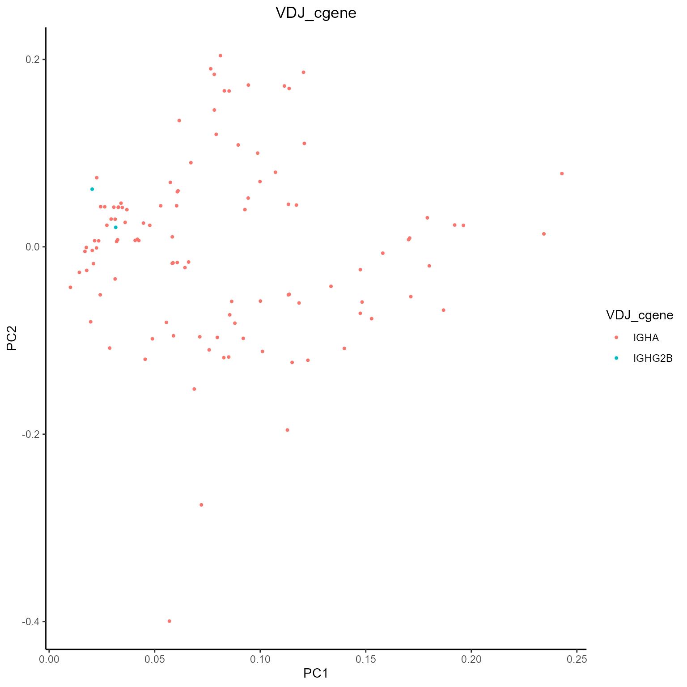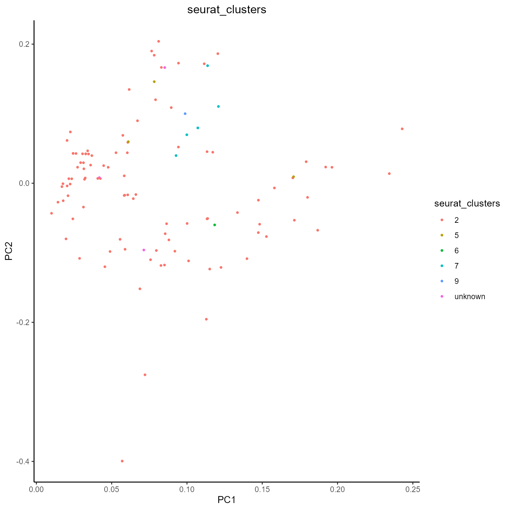
As you can see, plots are automatically colored by the node.features we have selected when creating our networks.
Metrics violin plots
For violin plots, we can select custom groups via the group.by parameter (e.g., grouping by ‘clonotype_id’ or by ‘seurat_clusters’). We can also select a maximum number of groups (max.groups) or specific groups to plot (specific.groups).
The specific metrics for our violin plots can be selected via the metrics.to.plot parameter.
#Pagerank and degree grouped by clonotypes
networks_with_metrics %>% AntibodyForests_plot_metrics(plot.format = 'violin',
metrics.to.plot = c('pagerank', 'degree'),
group.by = 'clonotype_id'
)## [[1]]
## [[1]]$pagerank##
## [[1]]$degree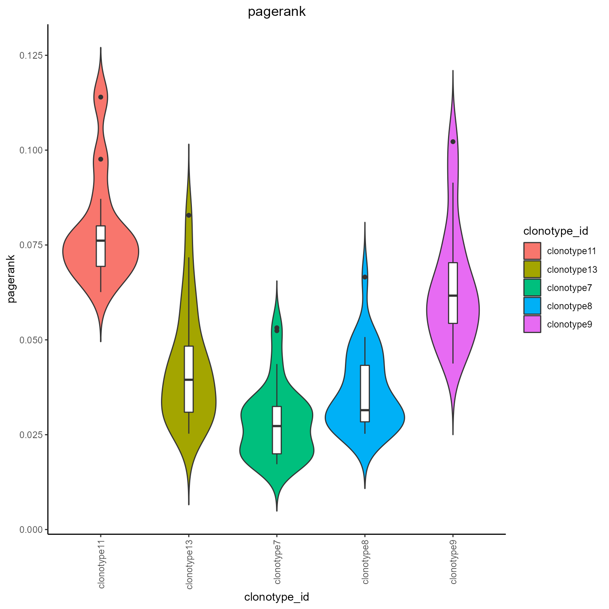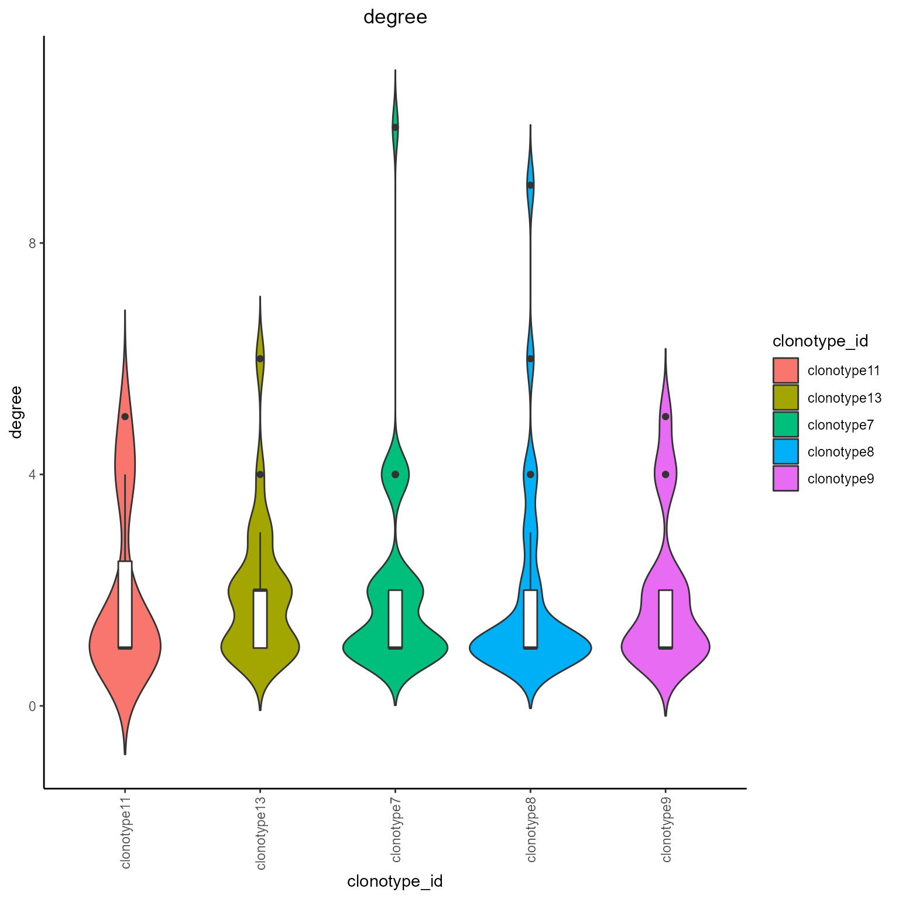
#Pagerank grouped by Seurat clusters
networks_with_metrics %>% AntibodyForests_plot_metrics(plot.format = 'violin',
metrics.to.plot = 'pagerank',
group.by = 'seurat_clusters'
)## [[1]]
## [[1]]$pagerank## Warning: Groups with fewer than two data points have been dropped.
## Groups with fewer than two data points have been dropped.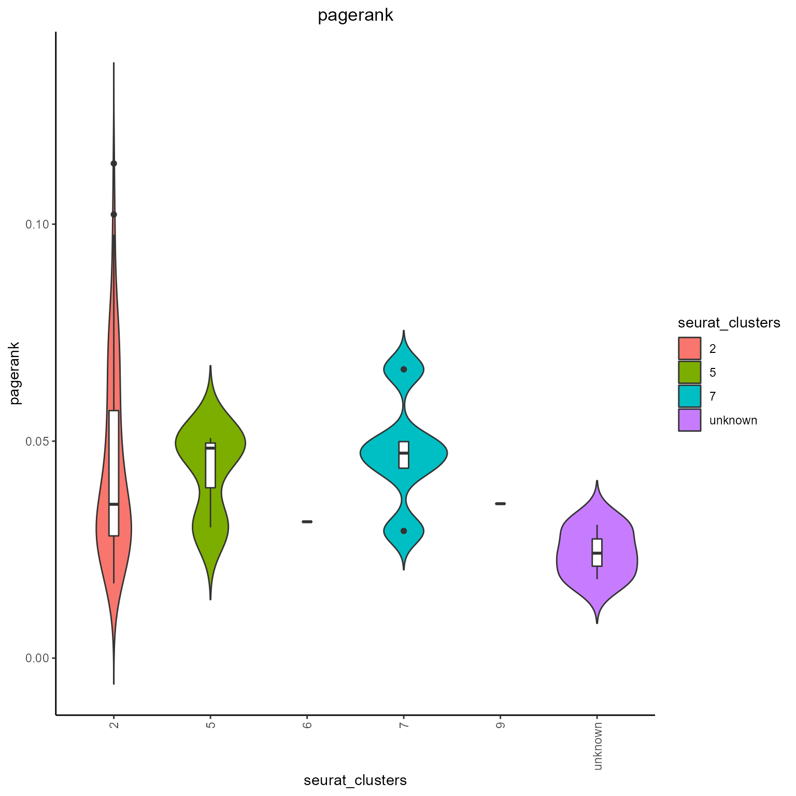
9.3. Network communities and cluster analysis via AntibodyForests_communities
Communities/clusters can be detected on a complex similarity network via AntibodyForests_communities. The resulting AntibodyForests object includes a ‘community’ vertex attribute, which can be used inside AntibodyForests_plot (or for grouping inside AntibodyForests_plot_metrics/ as groups in AntibodyForests_overlap, etc.,). AntibodyForests_communities will also output a barplot of feature counts per community - features can be counted at the sequence level (single unique feature per node = most frequent one), or at the cell level (all feature counts per single node, for all cells per node) - this is controlled by the count.level parameter (‘cells’ or ‘sequences’).
Currently, the community detection algorithms are implemented as wrappers to their respective igraph functions. Specific algorithms can be selected in the community.algorithm parameter. These algorithms include:
- The edge betweenness algorithm - ‘edge_betweenness’
- Louvain algorithm - ’louvain
- Label propagation - ‘label_prop’
- Leading eigen - ‘leading_eigen’
- Leiden - ‘leiden’
- Optimal - ‘optimal’
- Spinglass - ‘spinglass’
- Walktrap - ‘walktrap’
Nonetheless, for bipartite graphs, communities can be identified on each graph separately (which.bipartire = ‘sequences’ or ‘cells’) or both (which.bipartite = ‘both’).
networks_with_clusters <- AntibodyForests(VGM[[1]],
sequence.type = 'VDJ.cdr3s.aa',
network.algorithm = 'global',
pruning.threshold = 3,
node.features = 'seurat_clusters') %>%
AntibodyForests_metrics() %>%
AntibodyForests_communities(community.algorithm = 'louvain',
additional.parameters = list(resolution = 0.15)) ## Warning in vattrs[[name]][index] <- value: number of items to replace is not a
## multiple of replacement length
#additional parameters can be added for each clustering option as a named list - check the igraph documentation for such parameters (https://igraph.org/r/doc/cluster_louvain.html)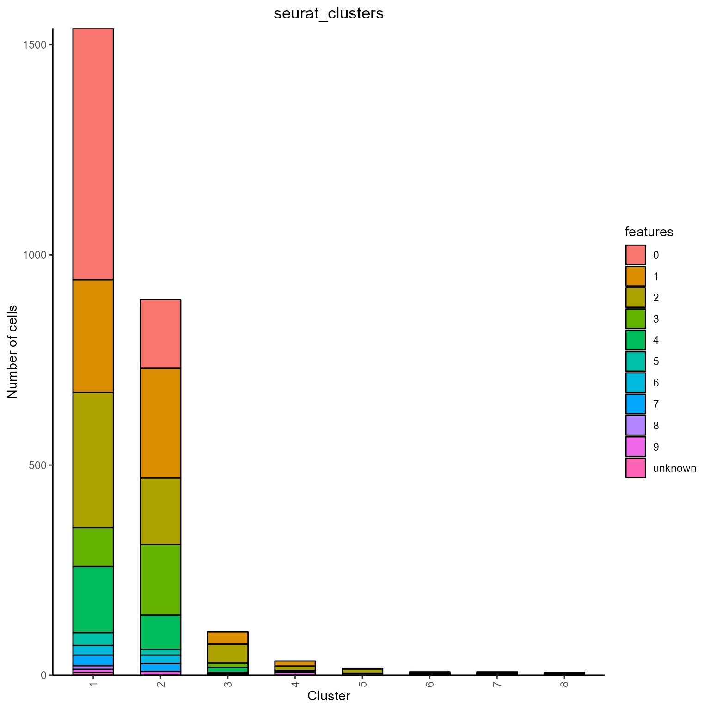
The resulting barplot with cell counts per feature, per cluster.
networks_with_clusters %>% AntibodyForests_plot(node.color = 'community',
network.layout = 'nice',
node.label = NULL,
node.scale.factor = 3)## AntibodyForests object
## 471 sequence nodes across 1 sample(s) and 353 clonotype(s)
## 471 total network nodes
## Sample id(s): s1
## Clonotype id(s): clonotype1, clonotype2, clonotype3, clonotype4, clonotype5, clonotype6, clonotype7, clonotype8, clonotype9, clonotype10, clonotype11, clonotype12, clonotype13, clonotype14, clonotype15, clonotype16, clonotype17, clonotype18, clonotype19, clonotype21, clonotype22, clonotype23, clonotype24, clonotype25, clonotype26, clonotype27, clonotype28, clonotype29, clonotype30, clonotype31, clonotype32, clonotype33, clonotype34, clonotype35, clonotype36, clonotype37, clonotype38, clonotype39, clonotype40, clonotype41, clonotype42, clonotype43, clonotype44, clonotype45, clonotype46, clonotype47, clonotype48, clonotype49, clonotype50, clonotype51, clonotype52, clonotype53, clonotype54, clonotype55, clonotype56, clonotype57, clonotype58, clonotype59, clonotype60, clonotype61, clonotype62, clonotype63, clonotype64, clonotype65, clonotype66, clonotype67, clonotype68, clonotype69, clonotype70, clonotype71, clonotype73, clonotype74, clonotype75, clonotype76, clonotype77, clonotype78, clonotype79, clonotype80, clonotype81, clonotype82, clonotype83, clonotype85, clonotype86, clonotype87, clonotype88, clonotype89, clonotype90, clonotype91, clonotype92, clonotype93, clonotype94, clonotype95, clonotype96, clonotype97, clonotype98, clonotype99, clonotype100, clonotype101, clonotype102, clonotype103, clonotype104, clonotype105, clonotype106, clonotype107, clonotype108, clonotype109, clonotype110, clonotype111, clonotype112, clonotype113, clonotype114, clonotype115, clonotype116, clonotype117, clonotype118, clonotype119, clonotype120, clonotype121, clonotype122, clonotype123, clonotype124, clonotype125, clonotype126, clonotype127, clonotype128, clonotype129, clonotype130, clonotype131, clonotype132, clonotype133, clonotype134, clonotype135, clonotype136, clonotype137, clonotype138, clonotype139, clonotype140, clonotype141, clonotype142, clonotype143, clonotype144, clonotype145, clonotype146, clonotype147, clonotype148, clonotype149, clonotype150, clonotype151, clonotype152, clonotype153, clonotype154, clonotype155, clonotype156, clonotype157, clonotype158, clonotype159, clonotype160, clonotype161, clonotype162, clonotype163, clonotype164, clonotype165, clonotype166, clonotype167, clonotype169, clonotype170, clonotype171, clonotype172, clonotype173, clonotype174, clonotype175, clonotype176, clonotype177, clonotype179, clonotype180, clonotype181, clonotype182, clonotype183, clonotype184, clonotype185, clonotype186, clonotype187, clonotype188, clonotype189, clonotype190, clonotype191, clonotype192, clonotype193, clonotype194, clonotype195, clonotype196, clonotype197, clonotype198, clonotype199, clonotype200, clonotype201, clonotype202, clonotype203, clonotype204, clonotype205, clonotype206, clonotype207, clonotype208, clonotype209, clonotype210, clonotype211, clonotype212, clonotype213, clonotype214, clonotype215, clonotype216, clonotype217, clonotype218, clonotype219, clonotype220, clonotype221, clonotype222, clonotype223, clonotype224, clonotype225, clonotype226, clonotype227, clonotype228, clonotype230, clonotype231, clonotype232, clonotype233, clonotype234, clonotype235, clonotype236, clonotype237, clonotype238, clonotype239, clonotype240, clonotype241, clonotype242, clonotype243, clonotype244, clonotype245, clonotype246, clonotype247, clonotype248, clonotype249, clonotype250, clonotype251, clonotype252, clonotype253, clonotype254, clonotype255, clonotype256, clonotype257, clonotype258, clonotype259, clonotype260, clonotype261, clonotype262, clonotype263, clonotype264, clonotype265, clonotype266, clonotype267, clonotype310, clonotype317, clonotype329, clonotype348, clonotype353, clonotype363, clonotype370, clonotype373, clonotype385, clonotype387, clonotype388, clonotype391, clonotype411, clonotype413, clonotype421, clonotype436, clonotype445, clonotype466, clonotype471, clonotype484, clonotype488, clonotype494, clonotype495, clonotype496, clonotype497, clonotype498, clonotype505, clonotype508, clonotype510, clonotype524, clonotype546, clonotype553, clonotype554, clonotype569, clonotype575, clonotype583, clonotype584, clonotype591, clonotype594, clonotype598, clonotype600, clonotype601, clonotype603, clonotype605, clonotype631, clonotype632, clonotype633, clonotype634, clonotype641, clonotype643, clonotype658, clonotype663, clonotype668, clonotype671, clonotype678, clonotype695, clonotype703, clonotype725, clonotype727, clonotype728, clonotype735, clonotype737, clonotype746, clonotype750, clonotype757, clonotype772, clonotype781, clonotype790, clonotype798, clonotype799, clonotype804, clonotype805, clonotype806, clonotype809, clonotype820, clonotype821, clonotype832, clonotype836, clonotype841, clonotype843, clonotype854, clonotype858, clonotype859, clonotype861, clonotype866, clonotype868, clonotype878, clonotype879, clonotype881, clonotype882, clonotype884, clonotype893
## Networks/analyses available: prune.distance, plot_ready, metrics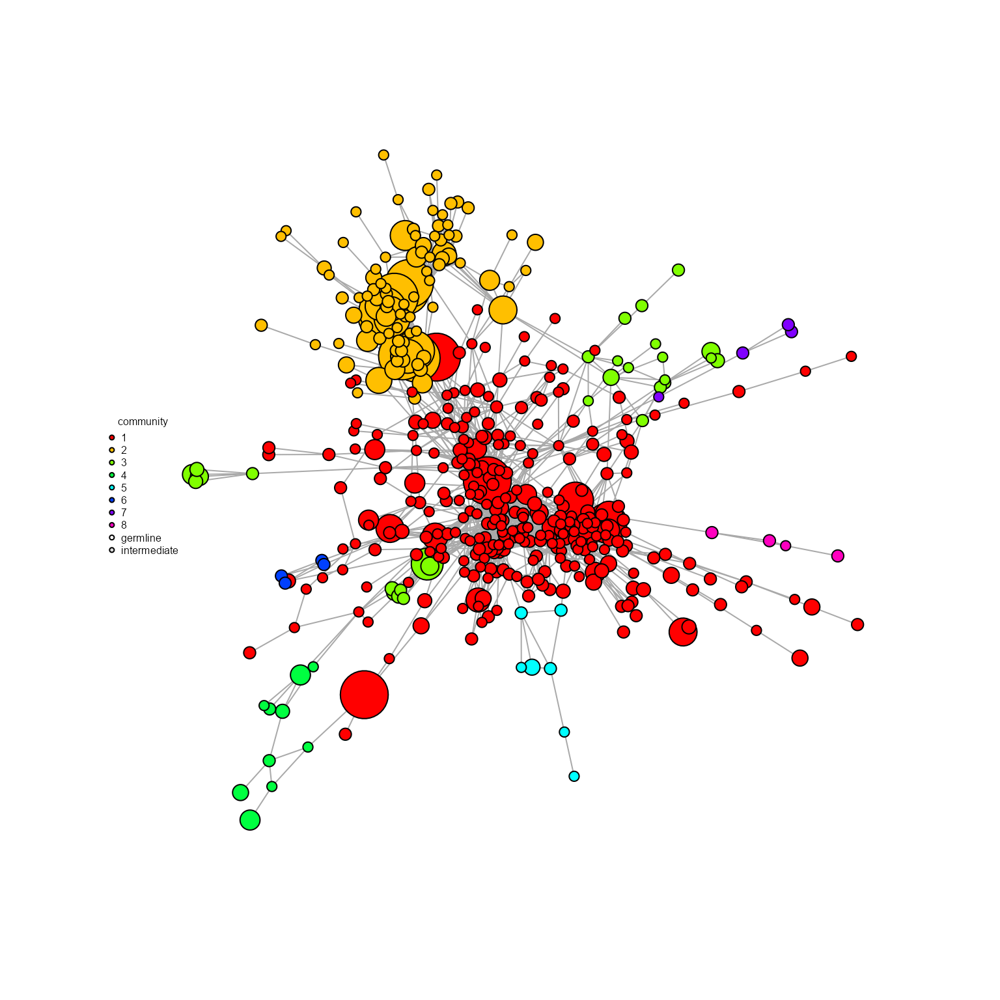
9.4. Edge overlap via AntibodyForests_overlap
AntibodyForests_overlap counts the unique features a set of edges connect - the result is an incidence/‘community’ matrix of ‘species’ (unique edges) per ‘sites’ (features connected by that edge). This matrix can then be analysed for feature overlap across all edges - either via the Jaccard similarity (method = ‘jaccard’) or simple counts (method = ‘overlap’), visualized as heatmaps.
networks_with_clusters %>% AntibodyForests_overlap(method = 'overlap',
group.by = c('community', 'seurat_clusters'))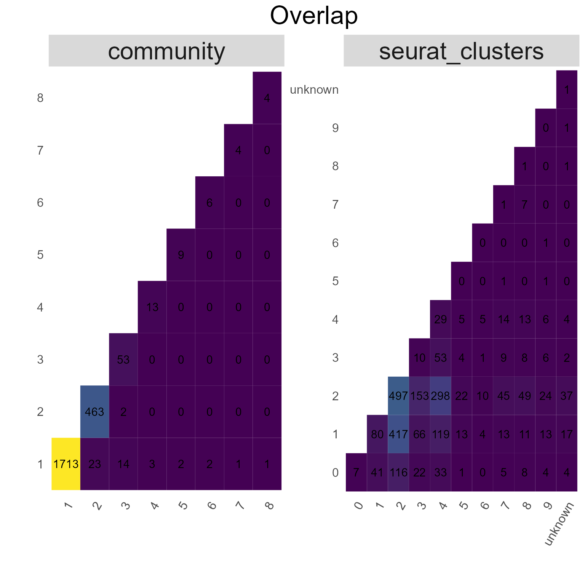
networks_with_clusters %>% AntibodyForests_overlap(method = 'jaccard',
group.by = 'seurat_clusters')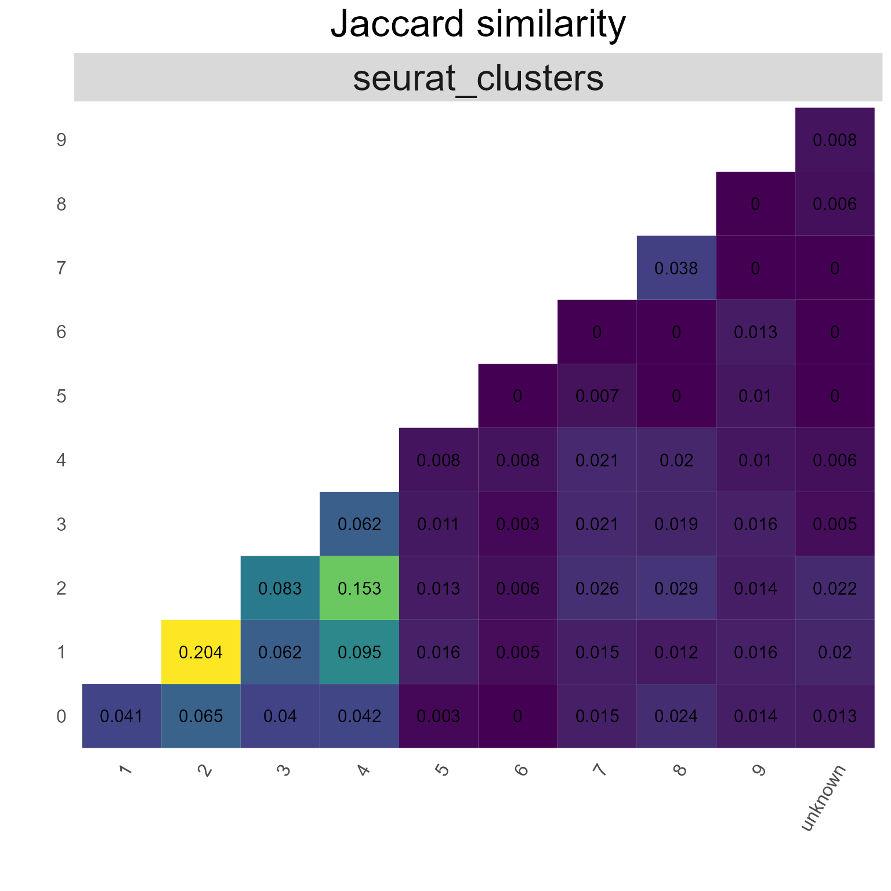
9.5. Node transitions via AntibodyForests_node_transitions
Node transitions are computed by counting the number of edges connecting a each unique pair of features (similar to the overlap calculation, but resulting in an abundance dataframe instead of an incidence one).
networks <- AntibodyForests(VGM[[1]],
network.algorithm = 'tree',
node.limits = list(5, NULL),
node.features = 'VDJ_cgene') %>%
AntibodyForests_join_trees() %>%
AntibodyForests_node_transitions(features = 'VDJ_cgene')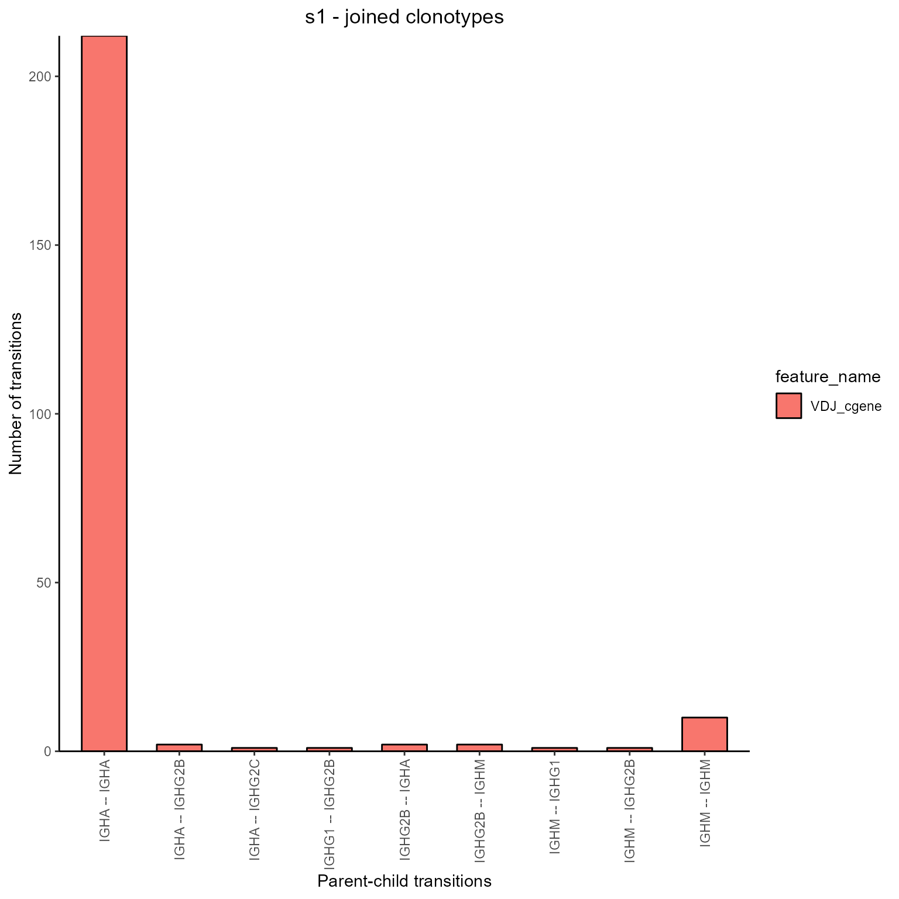
networks ## AntibodyForests object
## 258 sequence nodes across 1 sample(s) and 24 clonotype(s)
## 258 total network nodes
## Sample id(s): s1
## Clonotype id(s): clonotype7, clonotype8, clonotype9, clonotype11, clonotype13, clonotype17, clonotype18, clonotype22, clonotype24, clonotype25, clonotype26, clonotype28, clonotype29, clonotype31, clonotype32, clonotype34, clonotype45, clonotype46, clonotype48, clonotype50, clonotype57, clonotype61, clonotype69, clonotype71
## Networks/analyses available: tree, node_transitions
networks@node_transitions## from to counts feature_name
## 4 IGHA IGHA 212 VDJ_cgene
## 5 IGHA IGHG2B 2 VDJ_cgene
## 6 IGHA IGHG2C 1 VDJ_cgene
## 7 IGHG1 IGHG2B 1 VDJ_cgene
## 8 IGHG2B IGHA 2 VDJ_cgene
## 9 IGHG2B IGHM 2 VDJ_cgene
## 10 IGHM IGHG1 1 VDJ_cgene
## 11 IGHM IGHG2B 1 VDJ_cgene
## 12 IGHM IGHM 10 VDJ_cgene
## clonotype_id
## 4 clonotype7;clonotype8;clonotype9;clonotype11;clonotype13;clonotype17;clonotype18;clonotype22;clonotype24;clonotype25;clonotype26;clonotype28;clonotype29;clonotype31;clonotype32;clonotype34;clonotype45;clonotype46;clonotype48;clonotype50;clonotype57;clonotype61;clonotype69;clonotype71
## 5 clonotype7;clonotype8;clonotype9;clonotype11;clonotype13;clonotype17;clonotype18;clonotype22;clonotype24;clonotype25;clonotype26;clonotype28;clonotype29;clonotype31;clonotype32;clonotype34;clonotype45;clonotype46;clonotype48;clonotype50;clonotype57;clonotype61;clonotype69;clonotype71
## 6 clonotype7;clonotype8;clonotype9;clonotype11;clonotype13;clonotype17;clonotype18;clonotype22;clonotype24;clonotype25;clonotype26;clonotype28;clonotype29;clonotype31;clonotype32;clonotype34;clonotype45;clonotype46;clonotype48;clonotype50;clonotype57;clonotype61;clonotype69;clonotype71
## 7 clonotype7;clonotype8;clonotype9;clonotype11;clonotype13;clonotype17;clonotype18;clonotype22;clonotype24;clonotype25;clonotype26;clonotype28;clonotype29;clonotype31;clonotype32;clonotype34;clonotype45;clonotype46;clonotype48;clonotype50;clonotype57;clonotype61;clonotype69;clonotype71
## 8 clonotype7;clonotype8;clonotype9;clonotype11;clonotype13;clonotype17;clonotype18;clonotype22;clonotype24;clonotype25;clonotype26;clonotype28;clonotype29;clonotype31;clonotype32;clonotype34;clonotype45;clonotype46;clonotype48;clonotype50;clonotype57;clonotype61;clonotype69;clonotype71
## 9 clonotype7;clonotype8;clonotype9;clonotype11;clonotype13;clonotype17;clonotype18;clonotype22;clonotype24;clonotype25;clonotype26;clonotype28;clonotype29;clonotype31;clonotype32;clonotype34;clonotype45;clonotype46;clonotype48;clonotype50;clonotype57;clonotype61;clonotype69;clonotype71
## 10 clonotype7;clonotype8;clonotype9;clonotype11;clonotype13;clonotype17;clonotype18;clonotype22;clonotype24;clonotype25;clonotype26;clonotype28;clonotype29;clonotype31;clonotype32;clonotype34;clonotype45;clonotype46;clonotype48;clonotype50;clonotype57;clonotype61;clonotype69;clonotype71
## 11 clonotype7;clonotype8;clonotype9;clonotype11;clonotype13;clonotype17;clonotype18;clonotype22;clonotype24;clonotype25;clonotype26;clonotype28;clonotype29;clonotype31;clonotype32;clonotype34;clonotype45;clonotype46;clonotype48;clonotype50;clonotype57;clonotype61;clonotype69;clonotype71
## 12 clonotype7;clonotype8;clonotype9;clonotype11;clonotype13;clonotype17;clonotype18;clonotype22;clonotype24;clonotype25;clonotype26;clonotype28;clonotype29;clonotype31;clonotype32;clonotype34;clonotype45;clonotype46;clonotype48;clonotype50;clonotype57;clonotype61;clonotype69;clonotype71
## sample_id
## 4 s1
## 5 s1
## 6 s1
## 7 s1
## 8 s1
## 9 s1
## 10 s1
## 11 s1
## 12 s19.6. Paths in graphs via AntibodyForests_paths
Shortest or longest paths in a graph are calculated using AntibodyForests_paths. The resulting AntibodyForests object will have a new slot - paths, which can be used in the AntibodyForests_plot function. Starting and end-points of a path can be specified using the path.from and path.to parameters.
There are several options for these: for example, paths can be calculated from a germline node (path.from or to = ‘germline’), the most expanded node (‘most_expanded’), hubs (‘hub’), leaves (‘leaf’), or from specific node features (for example, paths from all IGHG nodes to the hub are computed by setting path.from to c(‘VDJ_cgene’, ‘IGHG’) and path.to to ‘hub’). Lastly, paths can be computed from a node identified by an integer (paths from the first node in a network - path.from = 1).
networks <- AntibodyForests(VGM[[1]],
network.algorithm = 'tree',
node.limits = list(5, NULL),
node.features = 'seurat_clusters',
specific.networks = 10) %>%
AntibodyForests_paths(path.from = 'germline',
path.to = 'leaf',
cell.frequency = T, #barplot y axis as cell counts per feature instead of node counts
color.by = 'seurat_clusters') #will color the nodes/cells in the path by seurat_clusters in the output barplot
networks[[1]][[1]]## AntibodyForests object
## 35 sequence nodes across 1 sample(s) and 1 clonotype(s)
## 35 total network nodes
## Sample id(s): s1
## Clonotype id(s): clonotype7
## Networks/analyses available: tree, paths
networks[[1]][[1]]@paths## $shortest
## $shortest[[1]]
## + 3/36 vertices, from c597807:
## [1] 36 7 319.7. Node embeddings via AntibodyForests_embeddings
AntibodyForests_embeddings infers structural node embeddings (from the graph structure, without additional features such from the encoded sequence/GEX) using either node2vec (https://arxiv.org/abs/1607.00653) or spectral embeddings on the adjacency/laplacian matrices. The next AntibodyForests update will include Graph Variational Autoencoder models for graph embeddings (including sequence and cell-level features).
The node2vec implementation requires the R version of keras to be installed. There are several hyperparameters to control the epochs, batch size, how the random walk is performed, and the skip-gram model, all described extensively in the AntibodyForests_embeddings documentation. The resulting node vector can be projected using either T-SNE (dim.reduction = ‘tsne’), UMAP (dim.reduction = ‘umap’) or PCA (dim.reduction = ‘pca’).
network <- AntibodyForests(VGM[[1]],
network.algorithm = 'tree',
node.limits = list(5, NULL),
node.features = 'seurat_clusters',
specific.networks = 15) %>%
AntibodyForests_join_trees()
network %>% AntibodyForests_embeddings(graph.type = 'tree',
embedding.method = 'node2vec', #or spectral_adjacency, spectral_laplacian
dim.reduction = 'pca',
color.by = 'seurat_clusters', #features = node colors in the output PCA plot
num.walks = 5, #small number of walks to speed up computation
num.steps = 10,
window.size = 5,
num.negative.samples = 4,
embedding.dim = 128,
batch.size = 64,
epochs = 20)9.8 Node label/feature propagation via AntibodyForests_label_propagation
To propagate specific features, AntibodyForests_label_propagation takes as input a nested list of AntibodyForests objects or a single object. This is useful in conjunction with AntibodyForest_expand_intermediates or on sparsely labeled similarity networks. The features parameter specifies to labels on which to propagate. There are currently two algorithms available: iterative graph diffusion - propagation.algorithm = ‘diffusion’ (X. Zhu and Z. Ghahramani, Learning from Labeled and Unlabeled Data with Label Propagation (2002), Technical Report) and a community detection algorithm assigning the new communities their respective labels (https://arxiv.org/abs/0709.2938) via igraph::cluster_label_prop - propagation.algorithm = ‘communities’.
To plot the new propagated features, use node.color = ‘feature_label_propagation’ inside AntibodyForests_plot.
AntibodyForests(VGM[[1]],
network.algorithm = 'tree',
node.limits = list(5, NULL),
node.features = 'seurat_clusters',
specific.networks = 'clonotype8') %>%
AntibodyForests_expand_intermediates() %>%
AntibodyForests_plot(node.color = 'seurat_clusters',
node.scale.factor = 4,
node.label = NULL)## AntibodyForests object
## 27 sequence nodes across 1 sample(s) and 1 clonotype(s)
## 27 total network nodes
## Sample id(s): s1
## Clonotype id(s): clonotype8
## Networks/analyses available: tree, plot_ready
AntibodyForests(VGM[[1]],
network.algorithm = 'tree',
node.limits = list(5, NULL),
node.features = 'seurat_clusters',
specific.networks = 'clonotype8') %>%
AntibodyForests_expand_intermediates() %>%
AntibodyForests_label_propagation(propagation.algorithm = 'diffusion',
diffusion.n.iter = 20) %>%
AntibodyForests_plot(node.color = 'seurat_clusters_label_propagation',
node.scale.factor = 4,
node.label = NULL)## AntibodyForests object
## 27 sequence nodes across 1 sample(s) and 1 clonotype(s)
## 27 total network nodes
## Sample id(s): s1
## Clonotype id(s): clonotype8
## Networks/analyses available: tree, plot_ready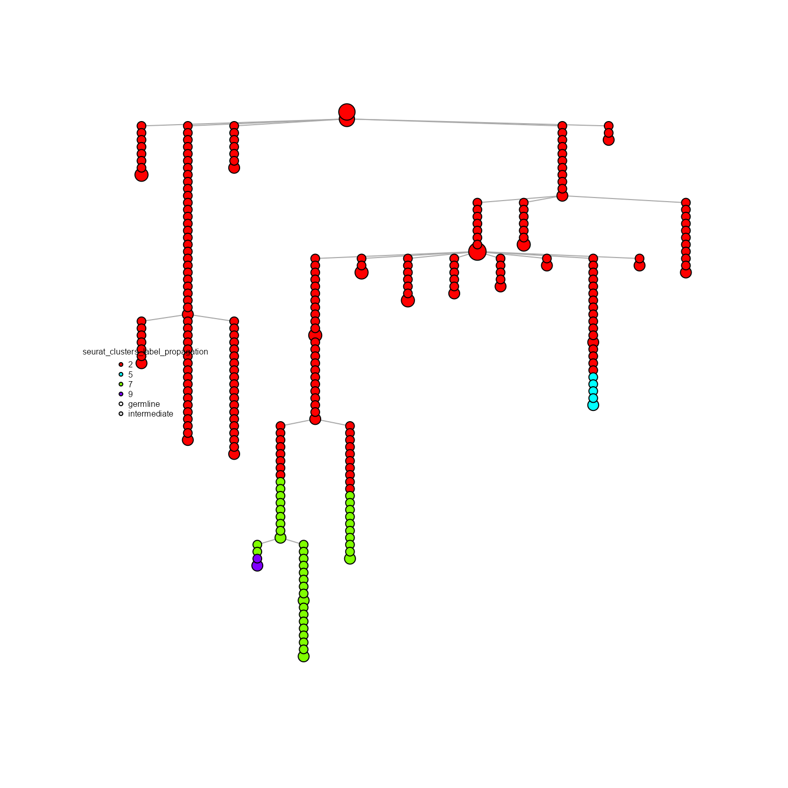
9.9 Kernel-based methods to compare networks via AntibodyForests_kernels
Kernel methods are useful for comparing the topology of several networks. In AntibodyForests_kernels, graph kernel methods are implemented via the graphkernels R package. The methods available include: the Weisfeilfer-Lehman kernel (kernel.method = ‘weisfeiler_lehman’), the graphlets-based kernel (kernel.method = ‘graphlet’), and the random-walk graph kernel (kernel.method = ‘random_walk’).
This function takes as input a list of AntibodyForests object.
networks <- AntibodyForests(VGM[[1]],
network.algorithm = 'tree',
node.limits = list(5, NULL),
specific.networks = 15)
networks <- networks$s1
networks %>% AntibodyForests_kernels(graph.type = 'tree',
kernel.method = 'weisfeiler_lehman')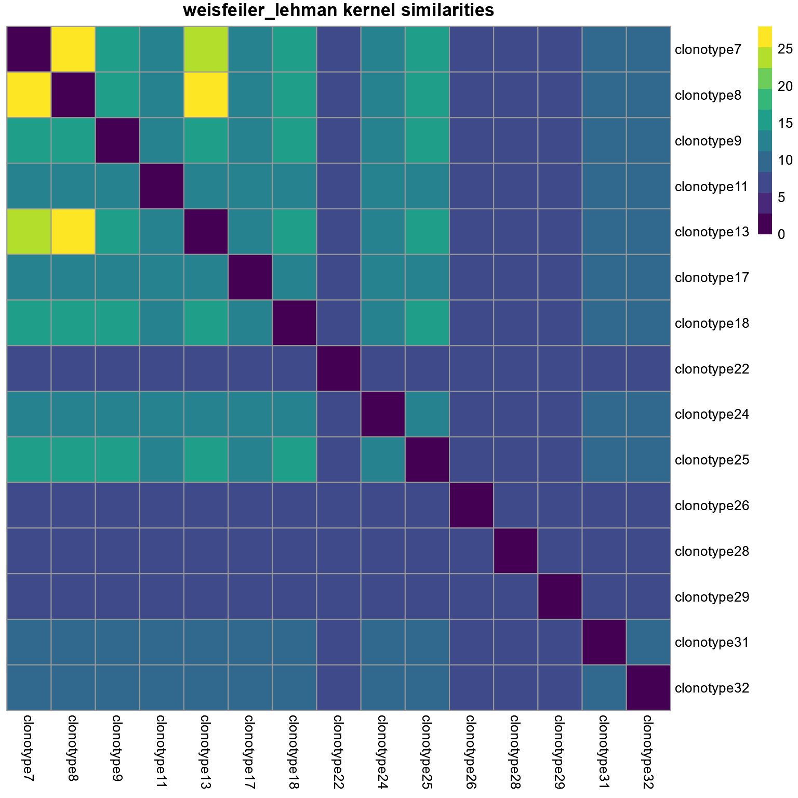
10. Version information
## R version 4.2.1 (2022-06-23 ucrt)
## Platform: x86_64-w64-mingw32/x64 (64-bit)
## Running under: Windows 10 x64 (build 19044)
##
## Matrix products: default
##
## locale:
## [1] LC_COLLATE=German_Germany.utf8 LC_CTYPE=German_Germany.utf8
## [3] LC_MONETARY=German_Germany.utf8 LC_NUMERIC=C
## [5] LC_TIME=German_Germany.utf8
##
## attached base packages:
## [1] stats graphics grDevices utils datasets methods base
##
## other attached packages:
## [1] forcats_0.5.1 stringr_1.4.0 purrr_0.3.4 readr_2.1.2
## [5] tidyr_1.2.0 tibble_3.1.8 ggplot2_3.3.6 tidyverse_1.3.2
## [9] Platypus_3.4.1 dplyr_1.0.9
##
## loaded via a namespace (and not attached):
## [1] utf8_1.2.2 reticulate_1.25 tidyselect_1.1.2
## [4] htmlwidgets_1.5.4 grid_4.2.1 combinat_0.0-8
## [7] Rtsne_0.16 munsell_0.5.0 codetools_0.2-18
## [10] ragg_1.2.2 ica_1.0-3 graphkernels_1.6.1
## [13] future_1.27.0 miniUI_0.1.1.1 withr_2.5.0
## [16] spatstat.random_2.2-0 colorspace_2.0-3 progressr_0.10.1
## [19] highr_0.9 knitr_1.39 rstudioapi_0.13
## [22] Seurat_4.1.1 ROCR_1.0-11 tensor_1.5
## [25] listenv_0.8.0 labeling_0.4.2 mnormt_2.1.0
## [28] polyclip_1.10-0 pheatmap_1.0.12 farver_2.1.1
## [31] rprojroot_2.0.3 coda_0.19-4 parallelly_1.32.1
## [34] vctrs_0.4.1 treeio_1.20.1 generics_0.1.3
## [37] clusterGeneration_1.3.7 xfun_0.31 R6_2.5.1
## [40] graphlayouts_0.8.0 spatstat.utils_2.3-1 cachem_1.0.6
## [43] gridGraphics_0.5-1 assertthat_0.2.1 promises_1.2.0.1
## [46] scales_1.2.0 googlesheets4_1.0.0 rgeos_0.5-9
## [49] gtable_0.3.0 globals_0.15.1 phangorn_2.9.0
## [52] goftest_1.2-3 rlang_1.0.4 systemfonts_1.0.4
## [55] scatterplot3d_0.3-41 splines_4.2.1 lazyeval_0.2.2
## [58] gargle_1.2.0 spatstat.geom_2.4-0 broom_1.0.0
## [61] yaml_2.3.5 reshape2_1.4.4 abind_1.4-5
## [64] modelr_0.1.8 backports_1.4.1 httpuv_1.6.5
## [67] tools_4.2.1 ggplotify_0.1.0 ellipsis_0.3.2
## [70] spatstat.core_2.4-4 jquerylib_0.1.4 RColorBrewer_1.1-3
## [73] ggridges_0.5.3 Rcpp_1.0.9 plyr_1.8.7
## [76] rpart_4.1.16 deldir_1.0-6 viridis_0.6.2
## [79] pbapply_1.5-0 cowplot_1.1.1 zoo_1.8-10
## [82] SeuratObject_4.1.0 haven_2.5.0 ggrepel_0.9.1
## [85] cluster_2.1.3 fs_1.5.2 magrittr_2.0.3
## [88] data.table_1.14.2 scattermore_0.8 lmtest_0.9-40
## [91] reprex_2.0.1 RANN_2.6.1 googledrive_2.0.0
## [94] fitdistrplus_1.1-8 matrixStats_0.62.0 hms_1.1.1
## [97] patchwork_1.1.1 mime_0.12 evaluate_0.15
## [100] xtable_1.8-4 readxl_1.4.0 gridExtra_2.3
## [103] compiler_4.2.1 maps_3.4.0 KernSmooth_2.23-20
## [106] crayon_1.5.1 htmltools_0.5.3 ggfun_0.0.6
## [109] mgcv_1.8-40 later_1.3.0 tzdb_0.3.0
## [112] aplot_0.1.6 expm_0.999-6 lubridate_1.8.0
## [115] DBI_1.1.3 dbplyr_2.2.1 MASS_7.3-57
## [118] Matrix_1.4-1 cli_3.3.0 quadprog_1.5-8
## [121] parallel_4.2.1 igraph_1.3.4 pkgconfig_2.0.3
## [124] pkgdown_2.0.6 numDeriv_2016.8-1.1 sp_1.5-0
## [127] plotly_4.10.0 spatstat.sparse_2.1-1 xml2_1.3.3
## [130] foreach_1.5.2 ggtree_3.4.1 bslib_0.4.0
## [133] stringdist_0.9.8 rvest_1.0.2 yulab.utils_0.0.5
## [136] digest_0.6.29 sctransform_0.3.3 RcppAnnoy_0.0.19
## [139] phytools_1.0-3 spatstat.data_2.2-0 fastmatch_1.1-3
## [142] rmarkdown_2.14 cellranger_1.1.0 leiden_0.4.2
## [145] tidytree_0.3.9 uwot_0.1.11 curl_4.3.2
## [148] shiny_1.7.2 lifecycle_1.0.1 nlme_3.1-157
## [151] jsonlite_1.8.0 desc_1.4.1 viridisLite_0.4.0
## [154] fansi_1.0.3 pillar_1.8.0 lattice_0.20-45
## [157] plotrix_3.8-2 fastmap_1.1.0 httr_1.4.3
## [160] survival_3.3-1 glue_1.6.2 png_0.1-7
## [163] iterators_1.0.14 stringi_1.7.8 sass_0.4.2
## [166] textshaping_0.3.6 memoise_2.0.1 irlba_2.3.5
## [169] future.apply_1.9.0 ape_5.6-2